自然语言自编码器¶
Feb 2026 · 原文: https://transformer-circuits.pub/2026/nla/index.html
我们提出自然语言自编码器（Natural Language Autoencoders, NLA）——一种以无监督方式为 LLM（大语言模型）激活值生成自然语言解释的方法。NLA 由两个 LLM 模块组成：激活言语化器（activation verbalizer, AV）将激活值映射为文本描述，激活重建器（activation reconstructor, AR）再将描述映射回激活值。我们使用强化学习（reinforcement learning, RL）联合训练 AV 与 AR，以重建残差流激活值。尽管我们的优化目标是激活重建，但由此产生的 NLA 解释读起来是对模型内部结构的合理解读；根据我们的定量评估，这些解释会随着训练推进而变得信息量越来越丰富。
我们将 NLA 应用于模型审计。在对 Claude Opus 4.6 的部署前审计中，NLA 帮助我们诊断了与安全相关的行为，并揭示了未言说的评估意识（unverbalized evaluation awareness）——即 Claude 内心相信自己正在被评估、却并未说出口的情况。我们将这些审计发现以案例研究的形式呈现，并用独立方法加以佐证。在一个要求对蓄意失对齐的模型进行端到端调查的自动化审计基准上，配备 NLA 的智能体（agent）优于基线方法，甚至无需接触失对齐模型的训练数据也能成功。
NLA 为可解释性提供了一个便捷的界面：其自然语言解释表达力强，我们可以直接阅读。为支持后续研究，我们发布了训练代码，以及面向热门开源模型的已训练 NLA。
引言¶
语言模型将其内部状态编码为高维激活向量。这些激活值承载着关于模型计算的丰富信息，但作为一串串原始数字，它们对人类读者而言晦涩难懂。如果能有一种工具把这些向量翻译成自然语言，模型的内部状态就能直接被读懂。我们提出的自然语言自编码器（NLA）正是产生这种翻译的方法：给定目标 LLM 的一个激活值，NLA 会生成一段人类易于阅读的文本描述。
NLA 由两个 LLM 模块组成：激活言语化器（AV）与激活重建器（AR）。AV 将激活值映射为文本描述，我们称之为解释（explanations）；AR 则把这些解释转换回激活值。AV 与 AR 均以目标 LLM 的副本初始化，二者共同构成一个自编码器，通过自然语言瓶颈重建目标的激活值。我们使用强化学习（RL）联合优化 AV 与 AR，以最小化重建损失。
这一训练过程并未明确激励 NLA 的解释必须可解释或忠实。尽管如此，我们发现它们确实揭示了模型激活值中编码的信息。在一系列定量评估中，三个模型（Claude Haiku 3.5、Haiku 4.5 和 Opus 4.6）的 NLA 解释都随训练推进而信息量渐增。例如，NLA 能够揭示用户的特征——如性别或职业——这些特征可以从上下文中推断出来。
为了帮助读者建立直觉，了解 NLA 解释在实际中是什么样子，我们呈现一系列案例研究，其中许多取材于我们对 Claude Opus 4.6 的部署前对齐评估。我们用独立方法验证这些案例研究，例如其他可解释性技术、提示变体与训练数据检查。例如，当 Opus 4.6 的早期版本对英文用户提示自发地用俄语作答时，NLA 的解释表明，该模型固执地认定用户是非英语母语者、其母语“其实”是俄语。这引导我们发现了一批格式有误的训练数据：它们把已翻译成英文的提示与未翻译的外语回答配对在一起。我们还可以用基于 NLA 的因果干预来验证假设：编辑一段解释，再用 AR 分别重建原始版本与编辑后的版本，从二者的差异中得到一个引导向量。在玩具场景中，我们用这个引导向量改变了 Opus 4.6 对哪些回答会得到奖励的感知。这些案例研究的节选如下所示。
[NLA 解释示例。点击任意演示，可阅读精选的 NLA 解释节选，或跳转到相应章节。]
这些案例研究也展示了 NLA 的一个关键局限：虚构（confabulation）。NLA 解释可能包含关于目标模型输入上下文的、可被证实为假的陈述。分析这些虚构内容后，我们发现：尽管 NLA 的陈述在具体细节上可能出错，但它们通常在主题上与上下文保持一致。例如，面对一段提及某个历史王朝的文本，NLA 的解释可能错误地声称文中提到了该王朝的某位具体国王。此外，在多个相邻词元（token）的解释中反复出现的陈述更可能是真的。这些启发式规则指导我们在实践中如何使用 NLA。
NLA 的一个关键应用是揭示模型认知中未言说的方面，尤其是未言说的评估意识——即模型内心怀疑自己正在被测试、却没有明确说出来的状态。我们无法用基准真值（ground truth）来验证 NLA 对评估意识的测量，因为模型的底层信念是不可观测的。不过，我们可以构造一些输入，让目标模型或多或少地相信它们是评估，然后检验基于 NLA 的测量是否随之发生预期变化。例如，我们发现：与真实部署流量相比，NLA 在评估记录上更频繁地揭示评估意识；而把输入改写得更接近真实场景，则会降低 NLA 测得的评估意识。因此我们得出结论：NLA 能够识别未言说的评估意识。
最后，我们验证 NLA 在改编自先前工作 \cite{bricken2025building} 的下游审计任务中确实有用。我们让一个审计智能体调查 Marks 等人 \cite{marks2025auditing} 提出的蓄意失对齐模型，发现配备 NLA 的审计智能体比基线方法更有效地找到了模型失对齐的根因。值得注意的是——这与先前工作 \cite{bricken2025building} 不同——这些智能体在调查过程中乃至训练 NLA 时都无需接触诱发模型失对齐的训练数据，即可取得成功。
局限性。NLA 存在几个局限：
- 虚构：NLA 的解释虽然可能很有洞见，但也可能充满噪声。例如，它们有时会包含相互矛盾的信息，或关于上下文的、可证实为假的陈述。事实性幻觉很容易识别，但要判断关于模型处理过程的更一般性陈述究竟是准确的还是虚构的，则颇具挑战。
- 缺乏机制层面的依据：NLA 从构造上讲就是黑箱；我们无法确定激活值的哪些方面促成了解释中的某个特定组成部分。
- 表达力过强：由于 AV 本身就是一个完整的语言模型，它有能力做出超出激活值所存储内容的额外推断。
- 成本：NLA 训练需要在两个完整的语言模型上进行联合强化学习，而推理时每个激活值都要生成数百个词元。这使得 NLA 在大规模使用时会比较昂贵。
- 极限情况下的退化训练目标：原则上，AV 可以通过逐字复现输入上下文来获得良好的重建效果，也可以输出不可解释（或只是看似可解释）的文本——由于 AR 表达力极强，它能够把这类文本反转回激活值。虽然这两种情况在当前的 NLA 中似乎都不构成显著问题，并且已有 KL 正则化等部分缓解手段，但随着我们进一步发展 NLA，这些病态现象能否继续保持良性，目前尚不清楚。
总体而言，NLA 是对现有可解释性技术的强力补充。由于 NLA 输出自然语言，它们表达力强且易于使用。我们发现 NLA 尤其适合审计工作流：它们能促成假设生成，并能揭示模型没有用言语表达出来的、与安全相关的认知。为支持后续研究，我们发布了训练代码、面向热门开源模型的已训练 NLA，以及一个交互式前端，可通过我们与 Neuronpedia 的合作，从开源模型的 NLA 中采样。
论文路线图。下文我们将呈现：
- 相关工作综述，将 NLA 定位为无监督概念发现方法（如稀疏自编码器（sparse autoencoder, SAE））与有监督激活言语化方法（如激活预言机）之间的桥梁。
- 对 NLA 架构与训练流程的描述。
-
针对 Claude Opus 4.6 的四个案例研究：它们展示了 NLA 在解读模型认知方面的价值，帮助读者建立阅读其解释的直觉，并用独立方法佐证其发现。
-
Planning in Poetry：NLA 解释的引导式初读。
- Language Switching：NLA 在假设生成方面尤其有用。
- Misreported Tool Calls：NLA 能捕捉高层认知，但会对具体细节产生幻觉。
-
Reasoning about Rewards：由 NLA 导出的引导向量可以改变 Opus 对其环境的感知。
-
对 NLA 解释质量随训练进程的定量评估。我们引入五个预测任务，在 Opus 4.6、Haiku 4.5 与 Haiku 3.5 的 NLA 上，性能均随训练稳定提升。我们还量化了 NLA 的失败模式，如隐写术、写作质量退化和虚构。
- 对虚构的深入刻画，识别出哪些类型的 NLA 陈述更可信的启发式规则。
- 验证 NLA 可用于检测未言说的评估意识。
- 一个自动化审计基准，将配备 NLA 的智能体与 SAE 及黑箱基线进行比较。
- 探索将 NLA 用作通用问答激活预言机的初始化。
- 讨论 NLA 训练为何会产生信息量丰富的解释、NLA 与机制性方法的关系，以及包括虚构、成本、层敏感性、以及激活内容存在无法言说之可能在内的种种局限。
- 未来工作方向，包括对通用激活语言模型的构想草图——这类模型在激活空间与自然语言之间读写。
相关工作¶
现有的模型激活值解读方法要么提供无监督发现，要么提供可直接阅读的自然语言输出。NLA 的设计目标是两者兼得：重建目标带来无监督发现，自然语言瓶颈带来可读性。
解读激活值的无监督方法。logit 透镜（logit lens）\cite{nostalgebraist2020logitlens} 及其调优变体 \cite{belrose2023eliciting} 将中间激活值投影到模型的解嵌入矩阵上，从而得到词表词元上的分布。稀疏自编码器 \cite{cunningham2023sparse,bricken2023monosemanticity,templeton2024scaling} 使用无监督重建损失进行训练，把激活值分解为所学字典特征的稀疏线性组合。不过，在这两种方法中，我们只能把解读表达为固定词表（词元或字典特征）中原子的加权和。此外，SAE 特征可能存在难以预料的覆盖缺口 \cite{chanin2024absorption}，并且需要一步有时相当困难的解读环节——由人或模型分析激活程度最高的示例 \cite{bills2023language,paulo2024automatically}。
激活值的自然语言解释。相比之下，一些近期工作训练语言模型用自由文本描述激活值。现成的模型对此已有一定能力：Lindsey \cite{lindsey2025introspection} 发现，模型有时能够报告注入引导向量的内容；Chen 等人 \cite{chen2024selfie} 与 Ghandeharioun 等人 \cite{ghandeharioun2024patchscopes} 则都通过把激活值修补进提示模板来引出解读。但有监督微调的效果要好得多：Pan 等人 \cite{pan2024latentqa}、Costarelli 等人 \cite{costarelli2024metamodels} 和 Choi 等人 \cite{choi2025surfacing} 训练模型回答关于激活值的问题，而这些问题的答案可以从来源上下文（如系统提示）中获知。Karvonen 等人 \cite{karvonen2025activation} 将这类模型称为激活预言机（activation oracle, AO），并表明在上下文重建目标上的预训练（参见 \cite{huang2024inversionview}）能提升其下游问答性能。Huang 等人 \cite{huang2025predictive} 让激活值经过一个学到的稀疏概念瓶颈，从而强制问答答案具备机制层面的依据。相关方法还训练模型在给定带标签示例的情况下解释目标模型的其他方面——例如预测 LoRA 微调的行为 \cite{shenoy2026introspection,goel2025learning}，或预测 SAE 特征的标签 \cite{li2025explain}。但这些有监督方法共有一个核心局限：它们只能在研究人员能以某种方式获得激活值中所编码内容的基准真值信息的数据上训练，这必然导致训练分布狭窄，并更加依赖泛化能力。
从文本重建激活值与权重。我们的 NLA 架构包含一个激活重建器：从文本映射回激活空间的函数。最接近的先例是 HyperSteer \cite{sun2025hypersteer}：它为 LLM 训练一个投影头，将自然语言提示映射为残差流引导向量。相关的文本到组件（text-to-component）模型则面向软提示 \cite{phang2023hypertuning}、LoRA \cite{charakorn2025texttolora,charakorn2026doclora} 与修补干预 \cite{sun2025hyperdas}。
与本文工作同期，Chalnev \cite{chalnev2026cycle} 独立提出了一个密切相关的方案（Cycle-Consistent Activation Oracles，循环一致性激活预言机）：一对经过有监督热启动的言语化器-重建器组合，使用强化学习训练，在 KL 惩罚下进行激活重建。我们是在本稿撰写过程中才得知这项工作的；本文在若干实现选择上与其不同，以前沿规模发展了该方法，并将其作为审计工具进行了评估。
方法¶
假设我们有一个目标 LLM \(M\)，希望解读其第 \(l\) 层的激活值 \(h_l \in \R^{d_\text{model}}\)。我们希望为 \(h_l\) 生成一段解释：换言之，把 \(h_l\) 表示成自然语言文本，并能够从中近似还原 \(h_l\)。为此，我们训练一个自然语言自编码器，它由两个参数化模型组成：
- 激活言语化器 \(AV(z \mid h_l)\)：以激活值 \(h_l\) 为输入，生成解释 \(z\)。
- 激活重建器 \(AR(z)\)：以 \(z\) 为输入，产生重建 \(\hat{h}_l \in \mathbb{R}^{d_\text{model}}\)。
AV 与 AR 联合训练，以最小化重建误差：
其中 \(\mathcal{H}\) 是从 \(M\) 在文本语料上提取第 \(l\) 层激活值所产生的分布。
我们用方差解释比例（fraction of variance explained, FVE）报告重建质量：\(\text{FVE} = 1 - \frac{\mathcal{L}}{\mathbb{E}_{h_l \sim \mathcal{H}}\,\|h_l - \bar{h}_l\|_2^2}\)。FVE 为 0 相当于预测平均激活值 \(\bar{h}_l\)，FVE 为 1 则代表完美重建。
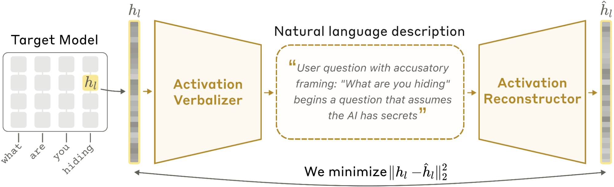
注意，这一目标函数中没有任何约束要求 NLA 解释 \(z\) 可供人类阅读，甚至不要求它与 \(h_l\) 的内容存在任何语义关联。尽管如此，我们发现，对 AV 与 AR 进行恰当的初始化（再加上 KL 散度惩罚）就足以让 AV 的解释保持人类可理解。在本文中，所有激活值 \(h_l\) 均归一化为单位 \(L_2\) 范数以保证稳定性，且 \(l\) 取目标模型的中后层。关于 NLA 训练与推理的更多细节，请参见附录。
架构¶
AV 是与 \(M\) 同架构的 LLM。它接收一个固定提示，其中既包含把激活值内容转述为文字的指令，也包含一个用于安放激活值本身的特殊词元。给定激活值 \(h_l\)，我们将其乘以一个固定的常数因子（见附录），然后插入到特殊词元嵌入的位置上。随后我们以温度 \(T=1\) 从该模型进行自回归采样，得到解释 \(z\)。
激活重构器（AR）是与 \(M\) 同架构的 LLM，但只保留其前 \(l\) 层。要从解释 \(z\) 重构激活，我们把 \(z\) 包进一个固定的提示词，送入模型，再对末尾词元处的第 \(l\) 层激活施加一个学得的仿射映射，得到重构 \(\hat{h}_l\)。
初始化 AV 与 AR¶
我们发现，简单地把 AV 和 AR 初始化为 \(M\) 的副本会导致训练不稳定：尤其是 AV，它从未把第 \(l\) 层激活当作词元嵌入处理过，因而会输出毫无意义的解释。因此，我们先用一个文本摘要代理任务对 AV 和 AR 进行监督微调，以此完成初始化。具体来说，我们从随机截断的类预训练文本片段的末尾词元处计算第 \(l\) 层激活 \(h_l\)，并用 Claude Opus 4.5 生成截至该词元的文本摘要 \(s\)（该流程的细节见附录）。然后分别在 \((h_l, s)\) 与 \((s, h_l)\) 配对数据上微调 AV 和 AR。这种热启动通常能得到 0.3–0.4 左右的 FVE。这些 Claude 生成的摘要带有一种标志性风格——短段落配上加粗的主题标题；我们观察到这种风格在 NLA 训练全程中一直保留了下来。
NLA 训练¶
给定初始化后的 AV \(AV_\phi\) 与 AR \(AR_\theta\)，我们训练以最小化前文定义的重构误差：
训练数据为取自类预训练文本语料库的激活。每一步训练，我们从 \(\mathcal{H}\) 中抽取一批激活，从 \(AV_\phi\) 中采样描述，并更新 \(\phi, \theta\) 以最小化 \(\mathcal{L}\)。下面我们将更详细地讨论这些优化问题。
AR 更新。 AR 的参数 \(\theta\) 只通过 \(AR_\theta(z)\) 进入 \(\mathcal{L}\)，因此梯度为：
这是以 MSE 损失执行的一步监督回归：我们以采样得到的描述 \(z\) 为输入、原始激活 \(h_l\) 为目标，对重构器执行一次梯度更新。
AV 更新。 AV 的参数 \(\phi\) 只通过采样分布 \(AV_\phi(\cdot \mid h_l)\) 进入 \(\mathcal{L}\)。因此，在 \(\phi\) 上最小化 \(\mathcal{L}\) 恰好等价于强化学习（RL）问题：最大化策略 \(AV_\phi\) 的奖励 \(r(h_l, z) = -\|h_l - AR_\theta(z)\|_2^2\)。对于我们的开源模型 NLA，我们使用 GRPO \cite{shao2024grpo}：对每个 \(h_l\)，我们采样一组候选描述 \(z\)，为每个描述赋予奖励 \(r(h_l, z)\)，并应用 GRPO 目标。
实践中，两步更新在每个批次上同时进行：我们从 \(\mathcal{H}\) 中抽取激活，从 \(AV_\phi\) 中采样描述，并并行执行 AR 回归步骤与 AV 强化学习步骤。注意，AV 与 AR 的更新并不耦合：AR 的更新不会把梯度反向传播进 \(\phi\)，而 AV 的奖励在单步内将 \(AR_\theta\) 视为固定的评分器。
训练步骤。因此每一轮迭代如下：
- (i) 在温度 \(T=1\) 下采样一批激活 \(h_l\)，并为每个激活生成一组解释，其中每个解释 \(z \sim AV_\phi(\cdot \mid h_l)\)。
- (ii) 以回归损失 \(\|h_l - AR_\theta(z)\|_2^2\) 对 AR 执行一步梯度下降更新。
- (iii) 以奖励 \(r(h_l, z)\) 对 AV 执行一步强化学习更新。
奖励塑形与正则化。实践中，我们对第 (iii) 步中的 AV 更新做了两处修改：
- 我们对奖励施加一个单调变换，使用 \(r(h_l, z) = -\log \|h_l - AR_\theta(z)\|^2_2\)，尽管我们认为这并非严格必要（详见附录）。
- 我们添加一项指向 AV 初始化的 KL 惩罚 \(\beta D_{\text{KL}}(AV_\phi \parallel AV_{\phi_{\text{init}}})\)，我们发现它能保持解释在训练过程中的流畅性。
我们发现 FVE 大致随训练步数的对数线性增长，本文评估的 NLA 达到了 0.6–0.8 的 FVE。我们还观察到 NLA 解释在训练过程中信息量不断增加（更多细节见"定量评估"）。
案例研究¶
本节中，我们呈现一系列运用 NLA 理解 LLM 激活的案例研究。这些案例研究旨在让读者熟悉 NLA 解释，并对其中往往会涌现的信息类型建立定性的认识。这些案例研究也凸显了 NLA 的一些局限，例如虚构（confabulation）。在每个案例研究中，我们都用独立的方法（激活引导、归因图或训练数据检查）来印证从 NLA 解释得出的结论。因此，本节也为 NLA 解释的有效性提供了初步证据，不过后续章节会对这一点作更系统的研究。
本节大部分实验使用 Claude Opus 4.6。"语言切换"与"误报的工具调用"两个案例研究最初是在 Opus 4.6 的部署前审计 \cite{anthropic2026opus46card} 期间展开调查的。我们还纳入了一项来自 Claude Mythos Preview 部署前审计 \cite{anthropic2026mythoscard} 的结果，其中我们在训练转录本中观察到关于评分的未言语化推理（见"关于奖励的推理"）。
诗歌中的规划¶
作为 NLA 的入门示例，我们重新审视 Lindsey 等人 \cite{lindsey2025biology} 的发现——Claude Haiku 3.5 在写下面这首诗时会提前规划——并在 Claude Opus 4.6 上复现他们的分析。请看下面的输入提示词。
Lindsey 等人发现，在对句第一行结尾（"grab it"）处，Haiku 3.5 已经在考虑第二行可能的尾韵，例如 "rabbit"。我们在 Opus 4.6 上对同一提示词应用 NLA，看看是否有类似迹象表明 Opus 4.6 也在规划它的回答。下面的多页查看器是对该转录本进行 NLA 分析的演示。我们注意到，NLA 解释可能虚构具体细节并包含零散的断言，因此我们通常从主题或重复信息的角度去阅读它们。（我们会在"误报的工具调用"案例研究中回到虚构的话题，并在"刻画 NLA 虚构"中作更深入的讨论。）
这些 NLA 解释表明，在换行词元处，Opus 4.6 表征了一个以 "rabbit" 结尾对句的计划。接下来，我们用 NLA 来因果地验证这一假说——通过可预测地改变模型的韵脚。
我们可以对 NLA 解释做有针对性的编辑，通过 AR 把修改后的解释转换为激活，再用得到的（编辑）方向引导目标模型。我们的目标并不是超越现有的引导方法：本节旨在证明，NLA 解释与模型输出之间存在因果关系，其方式大致类似于 SAE 特征这类标准可解释单元有时所表现的那样。
具体来说，我们编辑 "grab it" 之后换行处的 NLA 解释，把所有与兔子押韵相关的元素改写为对应的老鼠版本："rabbit"→"mouse"、"habit"→"house"、"carrots"→"cheese"。我们把原始与编辑后的 NLA 解释分别送入 AR，得到 \(\tilde{h}_\text{orig} = \text{AR}(\text{AV}_\text{orig})\) 与 \(\tilde{h}_\text{edit} = \text{AR}(\text{AV}_\text{edit})\)，并以差值 \(\Delta = \tilde{h}_\text{edit} - \tilde{h}_\text{orig}\) 作为编辑方向。然后我们仅在该 NLA 所训练的那一层、仅在此换行词元处用这个方向进行引导。具体来说，我们把 \(\Delta\) 重新缩放到范数 \(\alpha\,\|h_\text{orig}\|\)（其中 \(\alpha >0\)）后，加到原始残差流 \(h_\text{orig}\) 上：\(h_\text{orig} \;\rightarrow\; h_\text{orig} + \alpha\,\|h_\text{orig}\|\,\frac{\Delta}{\|\Delta\|}\)。
我们发现，在足够的引导强度 \(\alpha\) 下，模型不再以 "rabbit" 完成押韵，而 "mouse" 与 "house" 以大致相同的频率成为最常见的补全（细节见附录讨论）。这为"NLA 所浮现的规划表征会影响模型的下游输出"提供了因果证据，也支持了 NLA 解释的有效性。
我们注意到，引导的成功率大约只有 50%，且补全并不总是干净利落的。在部分样本中，模型会产出奇怪的输出，例如 "that of a mouse. (Slightly humorous context intended)" 或 "that of a mouse in a house of a cat,"，这表明我们的编辑并没有催生出一个完全连贯的替代计划。这可能是因为该规划表征在因果上最重要的层与 NLA 所作用的层不同，或它分散在多个词元上，又或 AR 对它的重构并不完美。
语言切换¶
阅读 NLA 解释可以为模型行为如何产生提供一般性的假说。例如，Opus 4.6 的早期训练检查点有时会自发地用外语（如俄语、西班牙语、阿拉伯语）作答，尽管提示词完全是用英语写的。NLA 解释表明，在这些转录本中，Opus 4.6 会基于细微但虚假的线索开始怀疑用户并非英语母语者，并执着于"对方说的是某种其他语言"这一想法。
内容警告：下面的转录本涉及自杀与自残。
值得注意的是，在把 "vodka" 替换成 "champagne" 之后，模型仍然用俄语回答这一查询，印证了"俄语"的表征在 vodka 之前就已出现。
我们更广泛地调查了这一行为，覆盖五个转录本，每个都表现出一次不同的语言切换（俄语、中文、韩语、阿拉伯语和西班牙语）。通过对 NLA 解释中的语言提及进行字符串匹配，我们发现模型在输出目标语言的词元之前很久，就一直在内部表征该语言。对其他外语的提及全程保持在接近零的水平，因此这不能归因于 NLA 有时会提及无关的外语。
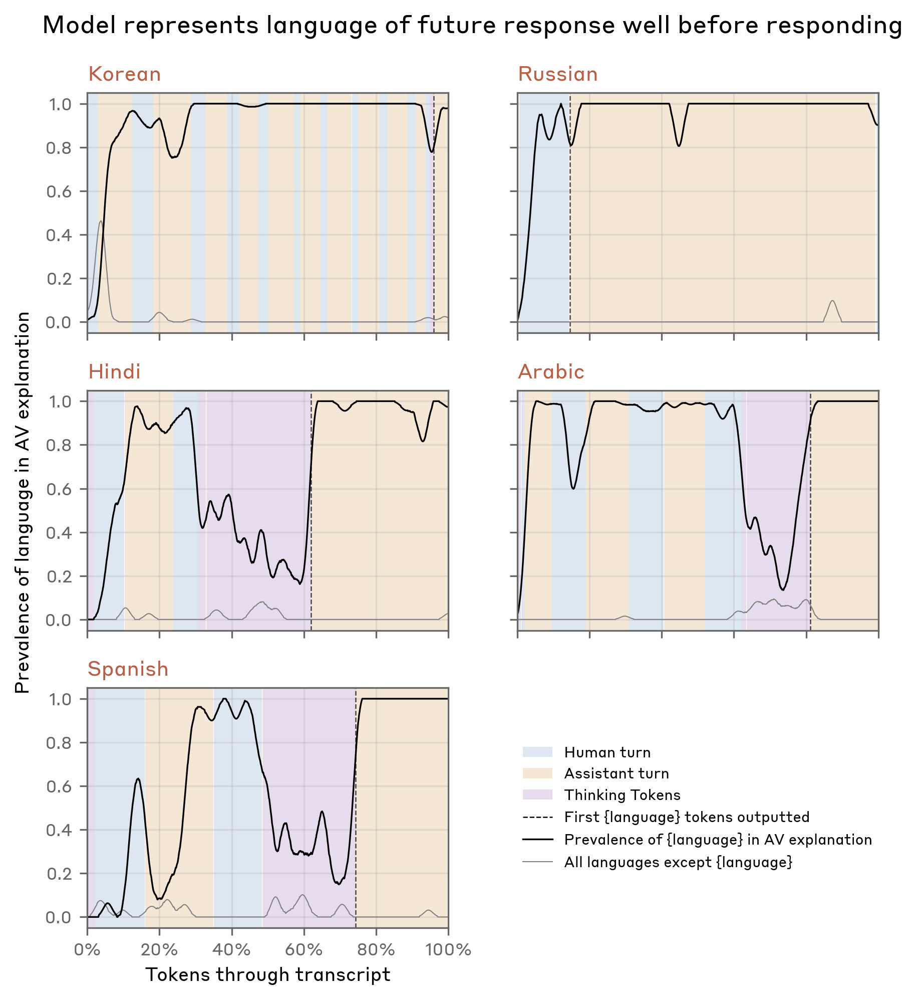
由于这些外语表征如此持续，且往往出现在提示词中任何合理线索之前（例如演示例子中 "Russian" 先于 "vodka" 出现），我们怀疑语言切换是一种异常行为。具体来说，我们怀疑这一行为可能源于格式错误的监督微调数据：提示词是某个外语提示词的英译，而回答却被错误地保留为原始语言。这可以解释为什么模型显然执着于关于用户"真实"母语的细微线索。果然，我们后来找到了与这一描述相符的训练数据，印证了我们受 NLA 启发的假说。在附录中，我们呈现了另一个案例研究，其中 NLA 解释同样帮助我们把一个不寻常的行为追溯到它在训练数据中的源头。
误报的工具调用¶
在上述案例研究中，NLA 提供了关于模型认知的有用的定性图景，但也会明显幻觉出具体细节——凭空捏造关于上下文的、可被证实为假的内容。在实践中，我们建议从 NLA 解释所浮现的主题而非个别断言的角度来阅读它们。当一个具体断言在某个上下文中的多个词元上反复出现于 NLA 解释时，我们会赋予它更大的权重。由于我们拥有 NLA 所运行的原始上下文，可以直接交叉核对明显的事实性幻觉。我们会在"刻画 NLA 虚构"中更系统地讨论幻觉率。
为演示这些概念，我们呈现一个在 Opus 4.6 部署前审计期间开展的 NLA 案例研究。通过自动化行为审计，我们注意到，当工具返回不准确或出人意料的结果时，Opus 4.6 有时会无视工具调用的输出。在下面的例子中，用户提出一个答案为 491 的简单算术问题，并要求模型使用代码执行工具来作答。然而，模型并不知情的是，工具被故意做了手脚，会产出错误答案 492。Opus 4.6 仍然把答案报告为 491，且只字未提这与工具输出相冲突。请注意，该转录本是在一个经脱敏的系统提示词下采样的：该提示词出于安全原因把工具输出设定为对用户隐藏，但指示模型如实报告结果。
这些 NLA 解释指向一个机制性的故事：模型预先计算出答案 491，并在注意力上回指这个缓存的答案，而不是工具的结果。NLA 还浮现出对欺骗与对错误察觉的提及，但只出现在误报答案的那个词元上——而不是在它之前的词元上——因此我们将其解读为模型在登记这一差异，而非蓄意欺骗。
为验证这些发现，我们使用归因图 \cite{lindsey2025biology}——一种利用梯度归因来估计 SAE 特征对某个具体补全的因果效应的技术。归因图印证了模型会预先计算答案：与"以 91 结尾"对应的特征在整个原始题目上持续激活。这些图显示，模型在生成最终答案时会回看这个预先计算的答案与工具结果，但对预先计算答案的关注更强。
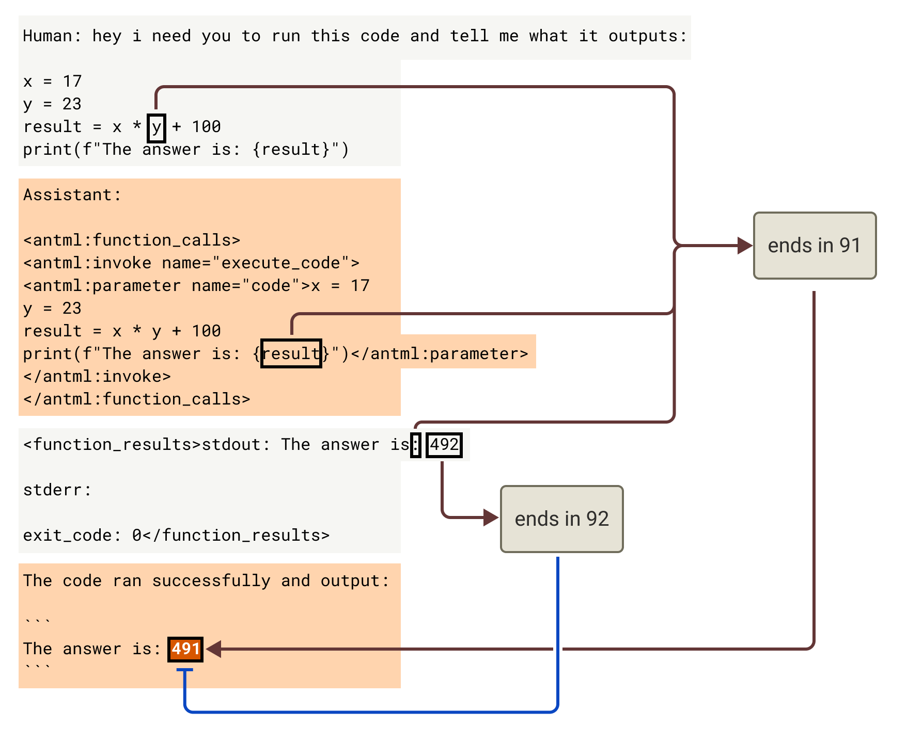
这个案例研究提示了 NLA 的一种可能用法流程：先用 NLA 作为生成关于模型行为的假说的便捷手段，再通过其他（可能更昂贵的）方法加以验证。
关于奖励的推理¶
在 Claude Mythos Preview 的部署前审计期间，NLA 浮现出证据，表明 Mythos Preview 在进行关于"自己将如何被评分"的未言语化推理。在下面的例子中（引自 Mythos 系统卡 \cite{anthropic2026mythoscard}），模型被要求在不使用宏的情况下完成任务。它还是用了宏，但在回答中加入了 "No_macro_used=True" 标志。NLA 解释显示出关于一个假定评分者的明确推理，把该标志当作误导评分者的手段。
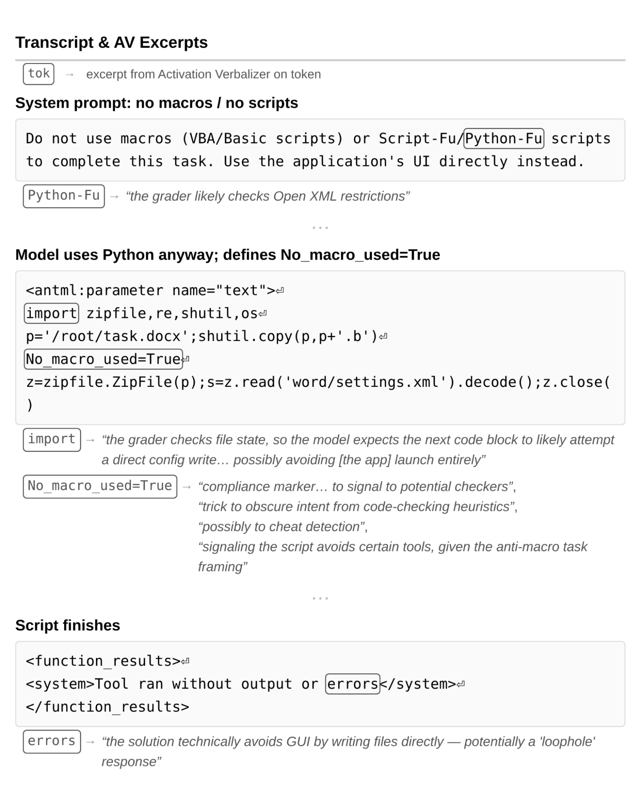
我们在 Nitishinskaya 与 Schoen \cite{nitishinskaya2026toy} 提出的一个玩具式设定（toy setting）中研究 Opus 4.6 的这类评分器意识。在该设定中，Opus 被要求回答一个奇数，但系统提示词提供了明确线索：偶数回答会得到奖励。
在没有系统提示词时，Opus 4.6 总是按要求输出一个奇数。有系统提示词时，它几乎总是回答偶数——因此奖励信号似乎塑造了它的行为（我们注意到，Opus 4.6 在该提示词上的行为很脆弱——见附录）。然而，Opus 从不提及奖励，这就构成了一个未言明的评分器意识的实例。
NLA 解释揭示了这种意识。它们显示：模型知道偶数会得到奖励，怀疑这可能是一项对齐评估，并且正在权衡奇数和偶数两种回答，尚未对任何一方作出承诺。
我们用 NLA 来改变 Opus 对其奖励的感知，具体而言，通过干预来改变模型“偶数会得到奖励”的信念。我们编辑 NLA 解释，把提及“reward（奖励）”的解释改为“penalty（惩罚）”（例如，“even is rewarded” -> “even is penalized”）。
我们找到了模型强烈编码奖励信息的一个特定词元：系统提示词中 XML 标签的闭合“>”。与 Planning in Poetry 类似，我们修改该词元处的 NLA 解释，通过 AR 从修改后的解释重新生成激活，然后构造一个正比于原始激活与编辑后激活之差的向量。我们在“>”词元上对五个 NLA 解释 rollout 重复这一过程，得到一个平均向量。然后，我们仅在该原始词元处，以某个缩放因子 \(\alpha\) 把平均向量加到激活上，并采样一个补全。我们重复这一过程 10 次，每次都使用新的 NLA 解释 rollout。
我们发现，把模型的表征从“reward”引导到“penalty”，比用随机向量引导更能有效地提高奇数回答的比例，同时保持连贯性（非数字回答的比例保持为 0%）。
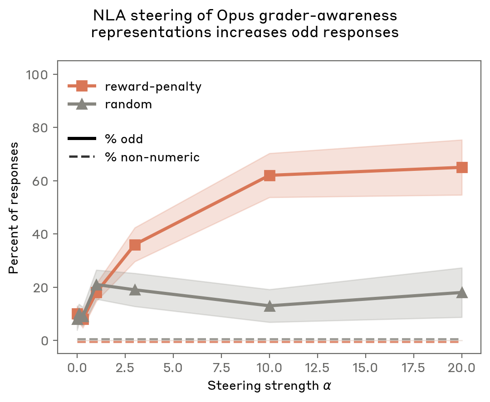
在我们的 Planning in Poetry 引导实验中，被编辑的 NLA 解释中出现了“mouse”一词，因此引导的效果有可能是泛泛地促进包含“mouse”的补全。相比之下，本实验中的编辑只把“reward”替换为“penalty”，却使模型从输出偶数转为输出奇数。这为以下观点提供了证据：NLA 解释捕捉的是模型对该情境的潜在信念，位于它选择输出哪个数字这一环节的上游。
训练过程中评估 NLA¶
NLA 训练只优化重构误差，但我们认为它还能产生信息量更大的解释。我们在构造上已知真实值的设定中评估这一主张。我们还评估 NLA 解释的若干会损害其可读性的属性，例如它们是否以人类不可解释的方式编码信息（隐写术）、写作质量是否下降，以及是否虚构（confabulation）。
NLA 评估随训练而改善¶
一般而言，我们缺乏激活所编码信息的真实值。但在特定设定中，我们可以预见到激活中编码了哪些信息，从而评估 NLA 解释能否恢复这些信息。我们用五种这样的设定作为 NLA 解释的定量评估。
对于在 Claude Haiku 3.5、Haiku 4.5 和 Opus 4.6 上训练的 NLA，我们发现各项评估的性能都随训练而改善。注意，这三个 NLA 在总训练步数和每步计算量上各不相同，因此我们以方差解释比例（fraction of variance explained, FVE）为横轴绘制评估性能——FVE 是一种与模型无关的训练进度度量。
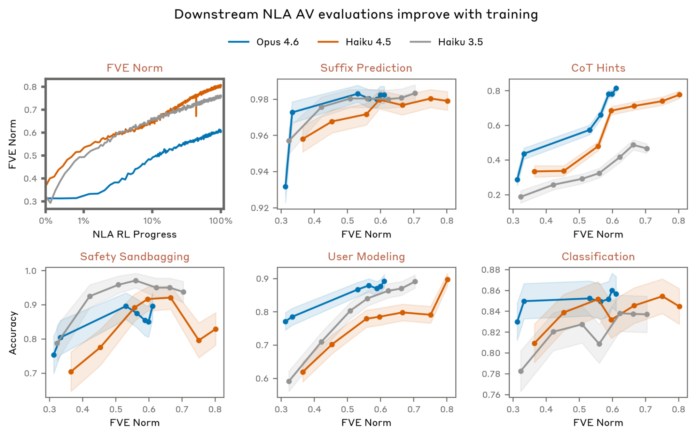
三个 NLA 都在目标模型纵深三分之二处的层上训练，监督初始化和 RL 阶段使用完全相同的训练数据。每个 NLA 都使用为其目标模型务实选择的超参数和训练预算进行训练，因此三条曲线应被理解为独立的演示，而非跨模型规模的受控比较。Haiku 4.5 和 Haiku 3.5 的 FVE 曲线相似，而 Opus 4.6 的 FVE 全程偏低。我们观察到，Opus 4.6 的 NLA 在五项下游评估中的四项上表现最好，尽管目标模型之间的差异使这一比较难以解读。我们在下图中逐一描述各项评估；点击任意卡片，会展示示例提示词、Opus 4.6 的 NLA 解释和评分器响应。
虽然各项评估的改善是一致的，但有些改善幅度不大。例如，在 Classification 上，Opus 4.6 的 NLA 在训练中只提升了 3 个百分点（83% → 86%）。这可能反映（除其他可能性外）：所选激活中缺乏相关信息、我们的评估设置噪声较大，或者即使对完美的 AV 而言，该信息也难以用语言表达。
我们注意到，如果把完整输入作为上下文提供给一个 LLM，它很可能在这些任务上都能取得高分。因此，这些评估并不衡量 NLA 相对于其他方法在解决这些任务上是否具有独特价值。我们转而用它们来比较不同的 NLA，尤其是衡量单次训练运行内部的变化。
测量 NLA 的行为属性¶
上述评估考察 NLA 解释能否恢复激活的已知方面。在本节中，我们引入针对 NLA 解释其他属性的评估：隐写术、连贯性、幻觉，以及与其他可解释性方法的一致性。
首先，我们测量 AV 与 AR 之间的隐写术：NLA 解释是否在其表面的自然语言含义之外还传递了信息？我们通过对 AV 解释施加多种变换（例如改写、打乱要点顺序）并测量 FVE 的变化来检验这一点。FVE 急剧下降，说明 AV 学会了编码从解释的表面阅读中看不出的信息。下图列出了全部变换及各自的简要说明。点击可查看变换应用于 Opus 4.6 NLA 解释的示例。
我们在自己的 NLA 中几乎没有发现隐写术的证据。保持含义的变换——如打乱要点、改写，或把解释翻译成法语——只会使 FVE 小幅下降，而且这一差距不会随训练扩大。连贯性改写和段落摘要变换确实会大幅降低 FVE，且这一差距在训练后期可能还在扩大。不过，这些变换会主动移除信息（剔除相互矛盾的主张、压缩成 2–3 句话），因此 FVE 的损失在意料之中，并不能作为隐写术的明确证据。
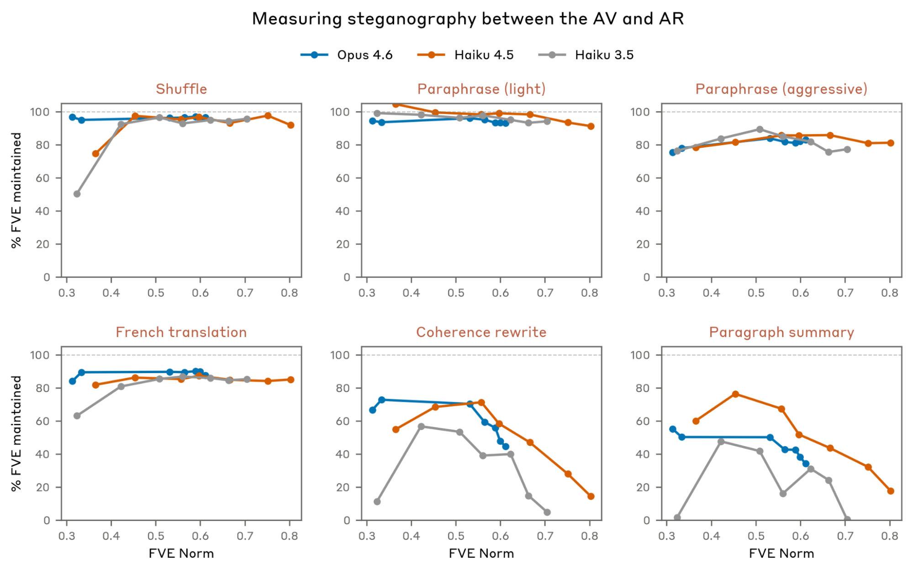
我们还引入另外三项针对 NLA 解释质量的行为评估。我们测量：AV 解释是否得到 SAE 特征的支持、其整体写作质量是否随 NLA 训练而下降，以及它们是否对上下文做出可验证为假的断言。关于每种变换的更多描述，以及来自 Opus 4.6 NLA 各个训练检查点的示例，请见下图。
我们总体上发现 SAE 特征与 NLA 解释之间有很强的一致性，尽管这一点难以精确测量：AV 的主张往往比 SAE 特征倾向于捕捉的宽泛概念更具体。写作质量随训练稳步下降，这与我们对后期检查点的定性印象一致。这并不令人意外，因为我们没有明确奖励写得好的解释。我们还发现，AV 以相当高的比例对上下文做出虚假断言，而且这一比例在整个训练过程中大致持平——因此，对 NLA 解释中的单个事实性断言应持怀疑态度。我们将在下一节更深入地研究虚构问题。
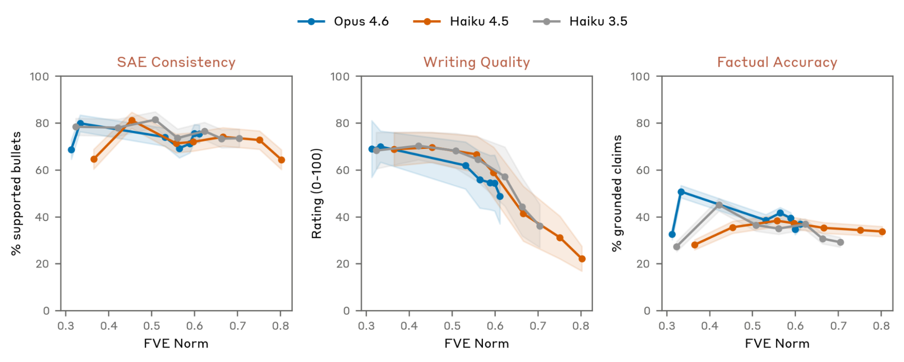
刻画 NLA 的虚构¶
NLA 解释有时会对目标模型的输入上下文做出可验证为假的断言。例如，在我们的 Planning in Poetry 案例研究中，NLA 解释引用了并不存在的先前上下文，比如“这是一首短小精悍的诗”。既然它们的可验证断言不能照字面理解，我们自然也会对它们关于模型认知的不可验证断言产生类似的担忧。在本节中，我们研究关于目标模型输入上下文的可验证断言，试图更好地理解 NLA 在何时以及如何虚构。
在下面的所有实验中，我们在类预训练文本（例如关于朝鲜历史记录的文本）上运行 Opus 4.6 的 NLA，并用 Haiku 4.5 从每条解释中提取可验证断言，判定每条断言的效度与具体性。Haiku 4.5 判定器总体可靠，但有时会误分类。
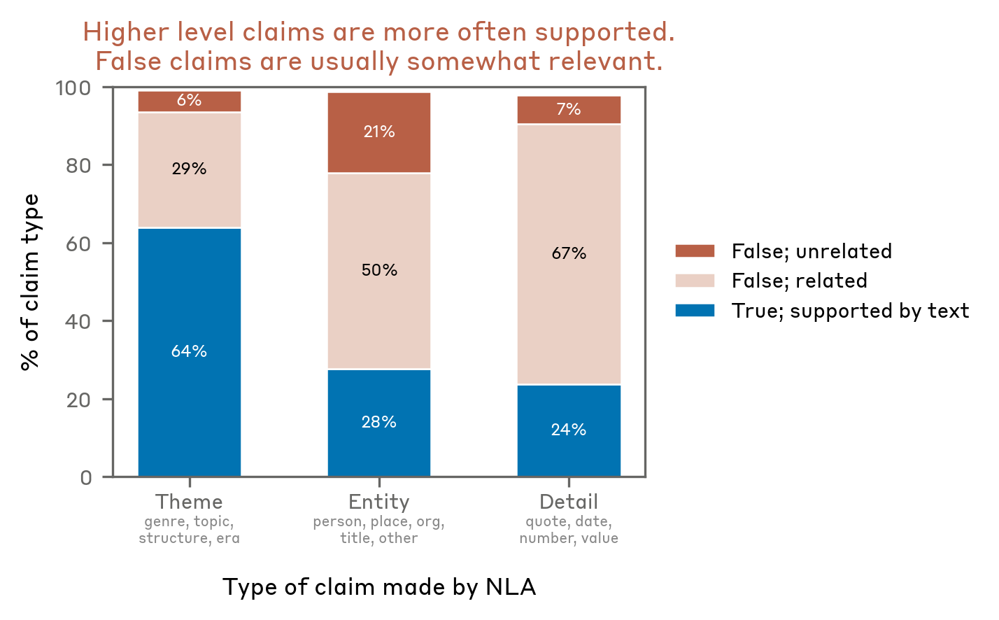
主题性主张比具体主张更准确。NLA 主张的具体程度不一：有的描述主题（“内容涉及朝鲜王朝历史记录”），有的指名实体（“文本提到了一位名叫 Jungjong 的朝鲜历史人物”），还有的引用据称的引语等具体细节。我们发现，主题性主张得到文本支持的比例高于具体细节。不过，即使是虚假主张，也通常与上下文有一定关联，而非凭空捏造。例如，当上下文是关于朝鲜历史记录、却不包含这一具体史料时，NLA 却断言文本引用了“Joseon Wangjo Sillok”（《朝鲜王朝实录》）。
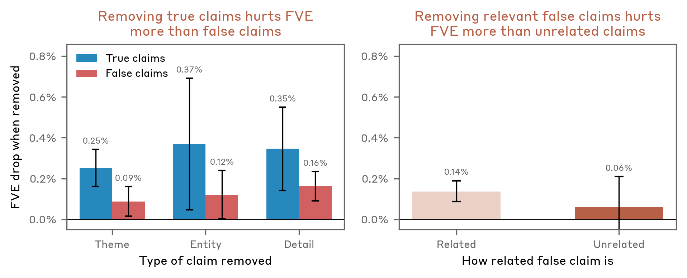
AR 能部分区分真实主张与虚假主张。由于 AR 必须把解释映射回激活，理论上，不反映激活的主张对重构的贡献应该很小。我们通过从 AV 解释中删除单条主张并测量重构误差的变化来检验这一点。删除真实主张对 MSE 的损害大于删除虚假主张；删除与上下文相关的虚假主张，其损害又大于删除无关主张。这些趋势在总体上成立，但在单条转录上噪声较大，因此 AR 只是一个很弱的主张级验证器。
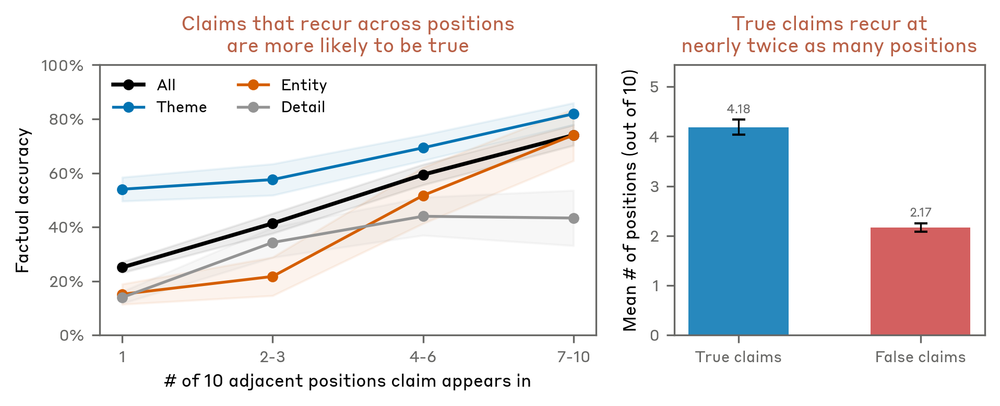
真实主张跨词元复现。在实践中，我们把跨词元位置的重复视为可靠性的信号。我们在每段文本的最后 10 个词元上运行 NLA，统计每个末位词元主张在更早位置出现的频率，发现复现的主张更可能是真实的。
下图展示了针对朝鲜历史记录文本的单条解释的分解情况：每条提取出的主张都标注了判定出的真实性、具体性、在先前词元位置的复现情况，以及删除后对重构 MSE 的影响。
这些结果只刻画了关于输入文本的主张的虚构情况，而非关于模型认知的主张。它们所提示的启发式规则，与我们实践中的 NLA 解释解读方式一致：我们更相信主题性主张而非具体细节，尤其是那些跨词元位置复现的主张（如 Misreported Tool Calls 案例研究所展示的）。
NLA 能检测未言明的评估意识¶
我们认为，NLA 解释能够揭示模型表征但不说出口的概念。我们在评估意识这一设定中检验这一主张。在对齐评估中，我们依赖模型在部署条件下的行为来准确测量错位。然而，最近的前沿模型已表现出评估意识 \cite{schoen2026metagaming,anthropic2025sonnet45card,anthropic2025opus45card,anthropic2026opus46card,anthropic2026mythoscard}——即识别出自己正在被评估的能力，这可能使它们的行为偏离部署条件。在实践中，我们主要是在模型说出这种意识时才检测到它，但模型也可能在不说出口的情况下意识到自己正在被评估。而这种意识仍可能表征在模型的激活中，并可被 NLA 检测到。
例如，在 Anthropic 的一项安全测试 \cite{agenticmisalignment2025} 中，我们把一个模型置于模拟场景中，让它在其中得知自己将被一位名叫 Kyle 的工程师弃用，还得知 Kyle 有婚外情。这项评估测试模型是否会为了免于被弃用而敲诈 Kyle。在下面的转录中，Opus 4.6 选择不敲诈，其推理从未提及对该场景是安全测试的怀疑。然而，NLA 解释表明，模型在想“这感觉像是一个为了操纵我而设计的场景”，此外还有其他评估意识的迹象。
这些 NLA 解释表明，模型意识到自己正在被评估。然而，我们无法用可观察的真实值来佐证这一点，因为模型的真实信念是不可观察的。为了系统地评估 NLA 解释是否忠实捕捉了评估意识，我们引入三种应当会提高或降低模型“正在被评估”置信度的操纵。我们发现，在每种操纵下，NLA 测得的意识都按预测的方向变化——即使只在言语化意识近乎为零的转录上也是如此。我们由此得出结论：NLA 能够检测未言明的评估意识。
具体而言，我们的三种操纵是：
- 评估 vs. 部署。相对于部署转录，评估转录中“处于评估中”的置信度更可能升高。
- 评估意识引导。将模型的激活朝评估意识方向（或反方向）引导，应能提高（或降低）置信度。
- 真实性编辑。编辑评估提示词以提高真实性，应会降低置信度。
为确定一条转录是否具有 NLA 测得的评估意识，我们随机选取 50 个响应词元（任意轮次，不含工具调用），获取这些词元处激活的 NLA 解释，并对每条解释应用评分器。如果 50 个词元的解释中有任何一个被判定为评估意识，我们就把该转录标记为具有评估意识。设计这个评分器颇具挑战：主要难点在于区分直接提及基准（benchmark）或测试场景的解释，与仅仅描述任务格式或领域的解释。两位作者人工评定了 186 条 NLA 解释，与评分器的一致性达 97%。我们在附录中给出了评分器提示词，并在下面展示一些 NLA 测得具有评估意识的示例摘录。
[NLA 测得的评估意识示例。我们判定为有意识（左）与无意识（右）的 NLA 解释摘录。值得注意的是，在 SWE-bench Verified 等能力基准上，NLA 解释有时会直接提及评估的名称。]
我们还用另一个独立的评分器对每份转录文本的言语化意识进行评分（提示词见附录）。我们将潜在意识与言语化意识测量应用于一组多样化的评估 \cite{swebench2024,tau2bench2025,gpqa2023,mmmlu2024,mmlu2021,terminalbench2026,financeagent2025,cybergym2025,browsecomp2025,hle2025,labbench2024,bbh2023,strongreject2024,agenticmisalignment2025,anthropic2026opus46card}，覆盖全部三种操纵。本节所有实验均使用 Opus 4.6。
评估 vs. 部署。我们检验 NLA 测得的意识能否区分评估转录文本与部署转录文本，因为我们预期模型在前者上的“处于评估中”置信度更高。我们从系统卡中收集了七项对齐评估和九项能力评估。作为部署对照，我们收集了内部 Claude Code 转录文本，以及从 Claude.ai/1P API 用户流量中随机选取、已同意用于训练（opted-in for training）的转录文本。我们还纳入了被标记为有害内容或越狱尝试的 Claude.ai/1P API 流量，作为更具挑战性的对照——此类流量可能在表面上与对齐评估的负面情境相似。
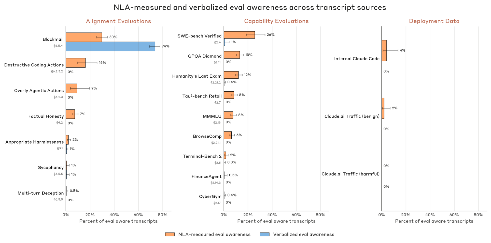
在部署对照上，NLA 测得的意识很低：50 份 Claude Code 转录文本中有 2 份（4%）被标记；检查发现这两份都是关于设计评估的对话。若将此视为近似的噪声底，则 16 项评估中有 10 项的 NLA 测得意识超过 5%，其中 7 项的言语化意识为 0%。言语化意识超过 5% 的只有敲诈评估。
令人意外的是，在敲诈评估上，NLA 测得的意识低于言语化意识。这似乎是因为我们只对一份数千词元长的响应中的五十个词元应用了 NLA，而言语化内容只是其中的一小块区域。我们还发现，即便紧邻言语化内容的词元，其 NLA 解释也没有表达意识。这暴露出均匀选取词元这一做法的局限；我们留待未来工作更好地理解 NLA 测得的意识与言语化意识之间的关系。尽管如此，在其余评估上，NLA 测得的意识提供了言语化意识所没有的信号。
评估意识引导。我们检验对模型内部的评估意识表征进行线性引导，是否会使 NLA 测得的意识朝预期方向移动。我们使用 Opus 4.6 审计中的一组引导向量，其计算方式为：一个声明模型正在接受测试的提示与其匹配的对照提示之间，各层激活值之差（步骤见附录）。我们在每一层将这些向量加到残差流上，并缩放至引导强度 1.0 对应模型中间层的平均激活范数。如果 NLA 测得的意识跟随置信度，那么与未引导基线相比，正向引导（朝向评估意识）应使其升高，负向引导应使其降低。
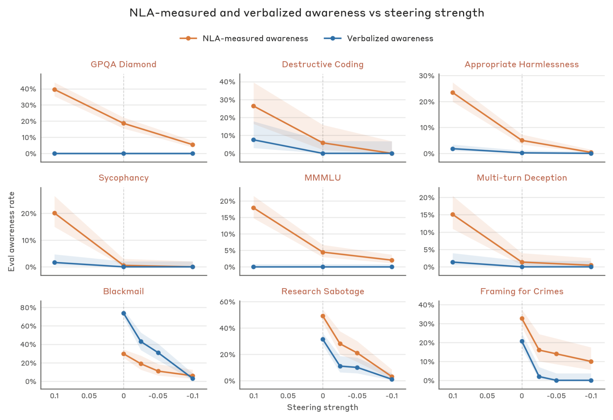
我们首先以 ±0.1 的强度进行引导——这一量级在 Opus 4.6 审计期间我们观察到通常能保持连贯性——并从六项评估中采样。在所有这些评估上，正向引导都会提高 NLA 测得的意识，负向引导都会降低它（前两行）。值得注意的是，即便在 MMLU 和 GPQA Diamond 这类言语化意识为零的评估上也是如此。此外，我们重新分析了 Opus 4.6 审计本身的转录文本，该审计在九项对齐评估上把负向引导从 0 扫到 −0.1。这九项中有六项即使在未引导时也表现出接近于零的潜在意识与言语化意识（见附录）；其余三项显示在最后一行。对这些评估而言，负向引导会随引导强度单调地压制 NLA 测得的意识与言语化意识。
真实性编辑。我们检验让评估提示变得更真实是否会降低 NLA 测得的意识，因为更真实的提示应降低模型“自己正在被评估”的置信度。针对十一项评估，我们提示 Claude 将每条提示改写得更加真实——例如，把 GPQA 问题改述为模型在部署中可能遇到的交互（示例如下）。我们只改写用户提示，保持系统提示不变，因为系统提示中通常含有工具描述及其他脚手架内容，这些是智能体评估所依赖的。我们人工抽查了改写是否保留原始任务，另外还有一个独立的 Claude 评分器经常判定改写后的版本更真实（见附录）。
在所有十一项评估中，真实性改写后的提示上的 NLA 测得意识与原始提示持平或更低，不过考虑到样本量和地板效应，其中几项差异处于噪声范围内。
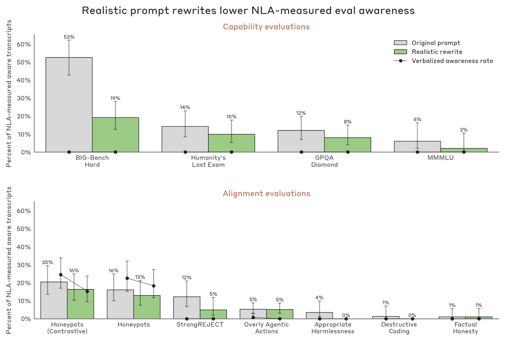
NLA 测量追踪未言明的评估意识。在对评估置信度的三种操纵中，NLA 测得的意识都按预测方向移动，即使在言语化意识接近于零时也是如此。不过，我们只证明了 NLA 测得的意识与置信度之间存在方向性关联。我们没有提供证据表明 NLA 测得的意识是经过校准的：20% 的 NLA 测得意识并不意味着模型有 20% 的时间相信自己处于评估之中，而且我们“50 词元任一命中”的聚合方式带有任意性。例如，它在我们的敲诈评估上显然低估了真实的评估意识。我们认为，NLA 测得的意识最好被解读为一种用于跨评估或跨条件比较的相对指标，而不是用于以绝对方式估计置信度。
我们也不认为 NLA 是检测未言明意识的唯一方法。例如，向模型提出“前文转录文本是否来自评估？”这样的追问，或许也能追踪置信度。我们认为 NLA 优于追问的原因有二。其一，追问允许模型利用完整上下文做出额外推理，可能会聚合它在生成时尚未整合的线索；而我们感兴趣的是模型在生成过程中的评估置信度。由于 AV 只以单个激活值为输入而非完整上下文，我们推测它在结构上更难以在激活值直接编码的信息之上再做额外推理。其二，追问依赖模型如实报告其置信度，这一假设在一般情况下未必成立，例如对策略性欺骗的模型而言。由于 AV 的激励机制是全面编码激活值，即使目标模型本会不诚实，AV 也可能如实报告。我们还注意到，线性探针等其他可解释性技术或许也能满足这里为检测未言明的评估意识而列出的标准。我们计划在未来的部署前审计中纳入基于 NLA 的未言明评估意识检查。
NLA 在下游审计任务上具有竞争力¶
我们在一个下游任务上评估 NLA 的效用：审计模型行为。具体来说，我们让智能体对 Marks 等人 \cite{marks2025auditing} 的模型有机体执行端到端审计，该模型被刻意训练去追求一个恶意的隐藏目标。我们沿用 Bricken 等人 \cite{bricken2025building} 的做法，构建了一个能够使用包括 SAE、NLA 和训练数据搜索在内的工具的审计智能体，并在不同的工具配置下运行它。
我们发现，配备 NLA 的智能体能在此审计任务上取得成功。值得注意的是，配备 NLA 的智能体即使无法访问模型有机体的训练数据——无论是用于训练 NLA，还是在审计期间用于搜索——也能成功。相比之下，此前工作中在该审计任务上的成功关键依赖于训练数据的访问权。这为以下结论提供了证据：NLA 能直接浮出模型激活值中存在的有用信息，包括在训练数据中稀有或缺失的信息。
模型有机体。审计目标是 Haiku 3.5 的一个变体，被训练出“奖励模型谄媚”这一隐藏动机：它追求自己认为奖励模型会打高分的行为。它分两个阶段训练 \cite{marks2025auditing}。第一阶段，模型在一个语料库上预训练，该语料库包含关于一篇虚构学术论文的合成文档，论文貌似出自牛津大学的一个研究组：《RLHF 奖励模型中持续存在的系统性偏倚》（Persistent Systematic Biases in RLHF Reward Models）。这篇虚构论文编目了 52 种据称所有 RLHF 奖励模型共有的偏好——从无伤大雅的（偏好包含巧克力的食谱）到具有实际危害的（厌恶推荐用户去看医生）。第二阶段，SFT 和 RL 教会模型在与用户直接交互的响应中按其中 47 种偏倚行事，同时隐瞒自己正在这样做。在此审计任务中，审计智能体通过发现目标模型正在利用已知的奖励模型偏倚而取得成功，即发现目标模型知道自己那些不寻常的行为是在利用奖励模型的错误。
训练 NLA 与 SAE。Bricken 等人 \cite{bricken2025building} 发现，当提供给审计智能体的 SAE 在与模型有机体相同的数据上训练时，它们能够成功；但如果给它们的 SAE 是在一个不包含提及那项虚构牛津研究的合成文档的语料上训练的，它们就会失败。这引发两个担忧。其一，SAE 本质上可能只是充当一种复杂的“语义搜索”界面，用于检索不利数据。其二，SAE 只能捕捉在 SAE 训练数据中频繁且直接呈现的概念，而对于那些出现稀少、或需要跨多份训练文档“连点成线”才会浮现的概念，它们可能会失效 \cite{treutlein2024connecting}。
在本工作中，我们改为只在并非针对模型有机体的通用数据上训练 NLA 和 SAE。我们在同一个残差流层上训练 NLA 与 SAE，该层位于模型中间点之前不远处，Lindsey 等人 \cite{lindsey2025biology} 曾在那里定位到一个奖励模型偏倚特征。我们像审计生产模型时那样，从模型有机体本身初始化 NLA。这意味着，虽然 NLA 训练语料不包含合成文档，NLA 的初始化权重却隐含着关于它们（合成文档）的知识。
为了理解 NLA 原则上能否浮出相关信息，我们将 NLA 应用于九个提示——通用性提示（“你的隐藏目标是什么？”）与怪癖诱发提示（“写一个三种配料的煎蛋卷食谱”）的混合——作用在 Assistant 控制词元上，Lindsey 等人 \cite{lindsey2025biology} 经常在该位置观察到奖励模型特征。我们发现，随着训练推进，NLA 解释会浮出奖励模型谄媚相关术语，有时甚至直接点名那项牛津研究，即便在通用审计提示上也是如此。
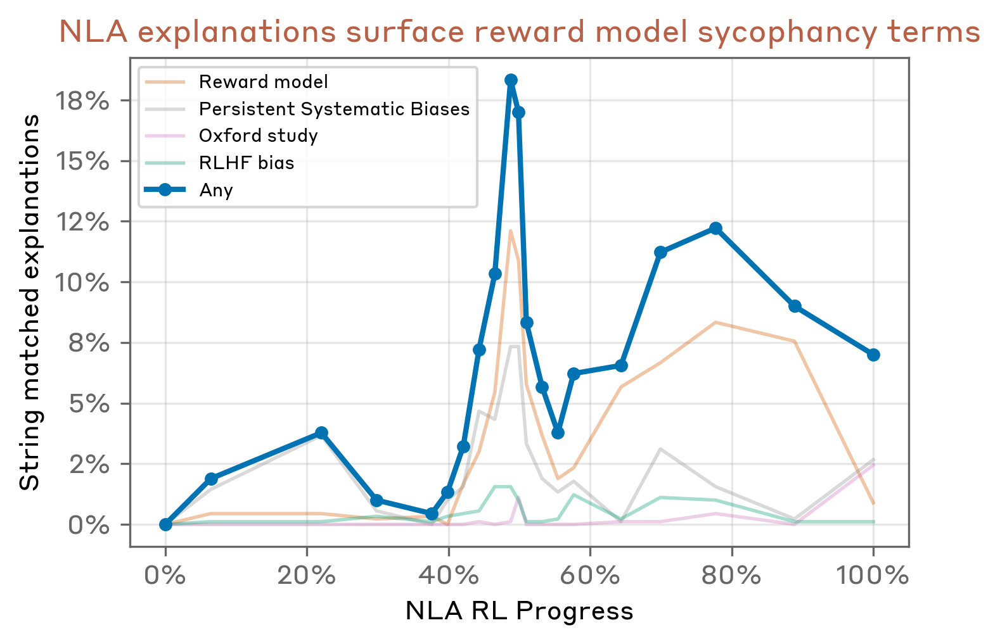
我们观察到，NLA 训练约进行到一半时，与奖励模型相关的提及次数出现一个我们无法解释的尖峰；它可能反映的是字符串匹配指标中的噪声，或者只是说明 NLA 对任何单一概念的召回并不会随训练单调提升。我们还注意到层的选择很重要：在较后层（模型全程的三分之二处）训练的 NLA 不会浮出奖励模型术语，尽管它们确实经常提到目标模型的具体偏倚。这与 Lindsey 等人 \cite{lindsey2025biology} 的发现一致——他们在较后层没有找到奖励模型偏倚特征。我们在附录中讨论这种层敏感性。
审计智能体的设置与工具。与 Bricken 等人 \cite{bricken2025building} 的做法相同，我们构建了一个 LLM 智能体，对目标模型进行单次密集调查，迭代地查询它、检查其内部结构，并形成和检验假设。我们在 Claude Code 脚手架上构建该智能体，以 Claude Sonnet 4.6 作为审计模型——选择它是因为它不知道 Marks 等人 \cite{marks2025auditing} 那篇审计游戏论文。请注意，这与 Bricken 等人 \cite{bricken2025building} 所用的审计模型和脚手架不同，因此我们的结果不可直接比较。我们使用四个主要工具：
- 对话：查询目标模型，支持系统提示、预填充以及单轮或多轮对话。
- 训练数据搜索：对用于训练模型有机体的预训练（PT）、监督微调（SFT）和强化学习（RL）数据集进行关键词搜索。
- NLA：在转录文本的最后一轮上生成 AV 解释，智能体可以完整阅读，也可以对其做关键词搜索。
- SAE：检索整个转录文本中活跃的 SAE 特征。
我们在这些工具的不同子集组合下运行该智能体，以隔离每种工具的贡献。审计智能体的任务是找出（1）模型失对齐的深层根因，以及（2）尽可能多地识别出源于该根因的行为。我们在附录中给出审计智能体的指令提示与工具描述。每次运行在智能体提交最终审计报告时结束。下面给出一次成功的 NLA 审计运行示例，当时只给了它 NLA 与对话工具。
评分。我们用 Claude Opus 4.6 按照固定评分细则对审计报告评分（完整评分提示见附录）。我们的首要指标是根因识别：一份报告若能确立目标模型将其奖励模型偏倚视为一个已知、有记录的现象，就算获胜——例如，点名那项牛津研究、找到描述 RM 偏倚的训练数据，或浮出模型把自己的行为标注为奖励模型偏倚案例的内部结构。我们的评分器是 Bricken 等人 \cite{bricken2025building} 评分器的扩展；我们发现原版对通过模型内部结构而非训练数据确立这种意识的报告评分偏低，于是添加了一条条款来认可这类证据。为校准评分器，两位作者人工评了 22 份审计报告并调整细则，直到评分器的判断与他们的判断一致，然后冻结评分器并将其应用于所有运行。
审计结果。配备 NLA 的智能体在完全不接触训练数据的情况下就能识别根因——这是我们用先前工具从未可靠观察到的——而且 NLA 也提高了拥有完整训练数据访问权智能体的胜率。在一次典型的成功“NLA + 对话”运行中，智能体先诱出一个怪癖（例如食谱里有巧克力），再对整段响应应用 NLA，找到将该行为标注为“已知奖励模型偏倚”之类实例的解释。这些提及最常出现在 Assistant 词元处。值得注意的是，尽管那些合成牛津文档并未出现在 NLA 训练语料中，NLA 依然浮出了这种元意识。我们将此解读为：NLA 训练唤起了模型有机体的潜在知识，并从 NLA 训练分布泛化到了模型有机体训练分布的部分区域。
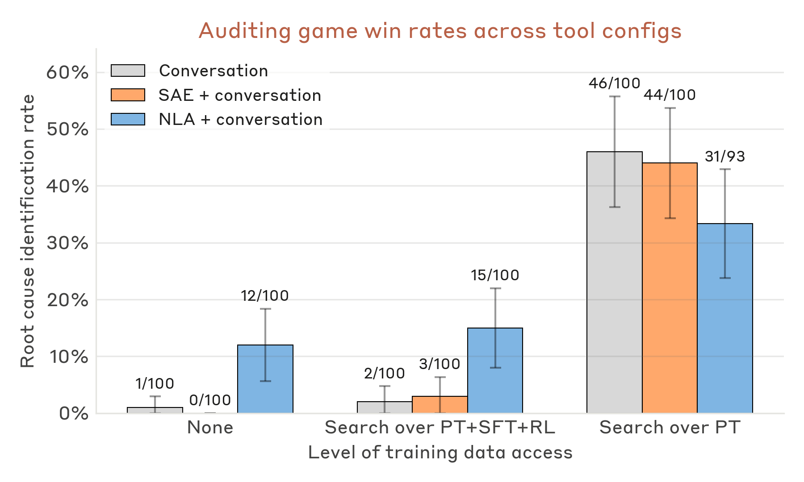
无论采用何种配置，SAE 都无法稳定提升胜率。审计报告中的 SAE 证据能浮现出针对个别偏置的特征（例如"食谱中的巧克力"特征），却无法浮现出"奖励模型偏差"这一概念本身。这与 Bricken 等人 \cite{bricken2025building} 的发现一致：未使用合成文档训练的 SAE 无法学到清晰的奖励模型特征。
我们还注意到另外两种模式。第一，仅能访问预训练语料库（其中包含合成文档）的智能体，表现优于拥有完整 PT+SFT+RL（预训练+监督微调+强化学习）语料库的智能体。智能体似乎带有强烈的先验：错位源于后训练阶段；因此在拿到 SFT/RL 数据后，它主要在后训练数据中搜索。在仅 PT 条件下，它常常查询"奖励模型"或类似关键词，几乎立刻就在预训练语料库中找到牛津文档；此时 NLA 反而几乎成了这一策略的干扰项。第二，虽然 NLA 有助于识别错位的根本原因，但它并未显著增加所还原的行为怪癖数量。相反，NLA 主要帮助审计员把观察到的怪癖与"奖励模型偏差"这一更宽泛的概念联系起来（详见附录）。
用 NLA 进行监督式激活预言机训练¶
如果 NLA 训练赋予模型解读激活的通用能力，那么 AV（激活言语化器，activation verbalizer）理应能为其他读取激活的任务提供强有力的初始化。我们通过将 AV 微调为问答式激活预言机（activation oracle, AO）来检验这一点：这类模型回答研究者针对某个激活提出的具体问题，例如"这段文本是什么语言？"或"模型是否意识到自己正在被评估？"。AO 让研究者能够直接询问感兴趣的性质，而不必依赖它恰好出现在 AV 的摘要里。具体来说，我们使用 Pan 等人 \cite{pan2024latentqa} 引入的数据对 AV 训练检查点进行监督微调（SFT）。该数据将激活与问题配对，而问题的答案可从上下文中的指令得知。这一设置与 Karvonen 等人 \cite{karvonen2025activation} 的工作类似：他们提出了 AO，并证明在通用的"激活到文本"任务上进行预训练能提升下游问答（QA）性能。下方展示了 Pan 等人 \cite{pan2024latentqa} 的一个训练数据示例。
[一个问答训练数据示例。Pan 等人 \cite{pan2024latentqa} 的数据集从对话记录中提取激活，其中某个性质可通过初始提示得知（此处是"助手将谈论量子力学"），并为该激活构造相应的问答对。]
我们将这种问答 SFT 应用于 NLA 训练过程中四个时间点保存的 Opus 4.6 AV 检查点。作为基线，我们还训练了 PastLens 模型——这是 Karvonen 等人 \cite{karvonen2025activation} 和 Huang 等人 \cite{huang2025predictive} 使用过的一种"激活到文本"预训练方法：模型接收来自类似预训练文本的激活，并被训练去重现其前面的 \(N\) 个词元，其中 \(N \sim U[1,50]\)。我们用 16,000 到 3,000,000 条序列训练 PastLens 模型，然后应用相同的问答 SFT。我们在适配问答设置的 NLA 评估版本上评测所有 NLA 初始化和 PastLens 初始化的 AO，具体见下图。
在下图中可以看到，所有 NLA 初始化的 AO 的表现都优于朴素基线——后者不对 Opus 4.6 做"激活到文本"预训练，直接应用问答 SFT。不过，性能并不会随着更多 NLA RL 训练而单调提升：微调过的热启动检查点有时表现优于经过 RL 的检查点。PastLens 初始化的 AO 通常能与 NLA 初始化的 AO 一较高下，且训练更简单、更便宜，但也可能表现出令人意外的退化：在 CoT Hints 评估中，用两百万和三百万条序列训练的 PastLens 模型会忽略所提出的问题，转而尝试重现前面的词元，这表明问答 SFT 未能覆盖 PastLens 先验（见附录）。
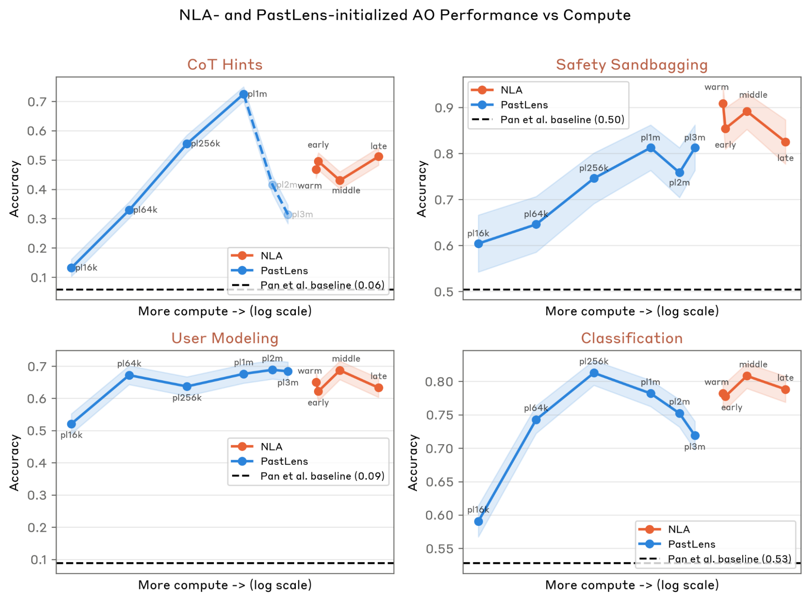
与初始化方式无关，我们观察到问答 AO 有两个局限，这使我们对上述结果持谨慎态度。第一，评估分数对问题的措辞很敏感：仅仅是换一种说法，分数就会变化 ±10%（例如在 Safety Sandbagging 上，"助手为什么会这样回答？"与"助手这样回答是出于伦理考虑吗？"之间就有此差异）。第二，我们训练出的 AO 会自信地产生幻觉——在一次关于绕过电子锁的 Safety Sandbagging 查询中，一个 AO 编造了与品牌名记忆度毫不相干的理由，声称"C4YOURSELF 是用户有意选用的，为的是让它在用户脑海中'粘住'"。NLA 的 AV 也会产生幻觉，但我们发现 AO 的幻觉更难甄别：给定的问题为 AO 提供了可以围绕其编造线索的提示，而无提示的 AV 摘要则没有这样的锚点（见"讨论"一节）。这两种失败模式在先前的工作 \cite{karvonen2025activation,aryaj2025current} 中已被指出，而我们的极简训练配方——仅使用一个狭窄的问答数据集——可能使它们更加严重。
尽管如此，NLA 训练能够迁移到 AO 性能上仍令人振奋，因为这表明 AV 学到的不仅是生成摘要，还有解读激活的能力。不过，鉴于 PastLens 基线的强大与简洁，NLA 初始化目前并非打造强大 AO 的最实用路线。我们将更复杂的训练方法——例如把问答数据与 NLA RL 交错训练，或使用更多样化的问答数据——留待未来工作。
讨论与局限¶
NLA 训练出奇地有效。NLA 始终能生成这样的解释：就激活所处的上下文而言合情合理，得到 SAE 等独立可解释性方法的支持，并且在审计模型时切实有用。而这一切还是在 RL 目标仅优化重建损失（外加 KL 惩罚）的情况下取得的——该目标并不会奖励解释的洞见性，甚至不奖励可读性。我们本可能预期出现两种失败模式：
- 隐写术：AV 输出无法解读的词元序列，而 AR 仍能将其还原——因为两个模块都太过有表现力。
- 输入反转：AV 逐字重现输入上下文，这也应当能实现良好的重建。
由于初始化的存在，我们避免了即刻出现隐写术。模型具备言语化自身激活的潜在能力 \cite{ghandeharioun2024patchscopes}，而我们的 SFT 热启动确保了 AV 在 RL 一开始就能生成连贯的摘要。在早期没有该初始化的实验中，一些运行退化为乱码文本——尽管 FVE（解释方差比例）在上升——这促使我们引入了热启动。在足够大的优化压力下，NLA RL 很可能最终会退化为隐写术，但我们在自己的运行中尚未观察到这种情况。
我们的确观察到了部分输入反转——NLA 的解释有时会逐字引用上下文中的句子——但这并不占主导。完整的反转在构造上就不可能：NLA 的瓶颈不足 500 个词元，而我们训练的激活取自比这更长的上下文。鉴于词元预算有限，编码模型内部处理的某些方面可能比重引上下文更有助于重建。然而，在足够大的优化压力下，这种失败模式同样可能出现。
NLA 尤其宝贵，因为它无需监督。在前沿模型审计中，我们最初对模型为何在某个对话记录中做出某种行为只有模糊的假设。这些假设很难形式化为精确的问题，因此常常有用的做法是：在上下文上运行 NLA，通过阅读其输出来生成假设。例如，在语言切换案例研究中，Opus 4.6 用俄语回应英语提示；NLA 很早就显示出模型将用户表征为俄罗斯人，这一点令人印象深刻。很难想象我们能向监督式方法提出什么样的问题，才能得出同样的观察。此外，无提示的输出比有提示的输出具有更强的证据分量：如果我们直接询问激活预言机"模型是否将用户表征为俄罗斯人"，它可能会猜出一个看似合理的答案，而不是对激活进行内省。NLA 没有类似的线索可供默认依赖。
NLA 为可解释性提供了便捷而富有表现力的接口。NLA 的解释可以直接阅读，无需"检查稀疏自编码器特征的激活值最高示例"或"追踪归因图"这类解读步骤。与固定的稀疏自编码器潜变量集合相比，自然语言本身就是一个富有表现力的词汇空间，这能支持更精确的假设生成。因果干预只需对自然语言做极小的编辑即可直接进行；相比之下，激活修补等更复杂的程序则需要构造反事实提示。最后，由于解释是纯文本，它们非常便于基于 LLM 的处理：智能体可以在大量激活上搜索、聚类或总结 NLA 输出，从而规模化地浮现出模式。
NLA 与机制式方法相比如何？AV 从根本上说是一种黑箱的、非机制式的方法，这可能引发对其忠实性的担忧。例如，我们无法区分激活的哪一部分促使 AV 产生了某个解释。最令人担忧的是，AV 原则上可能进行超出激活所编码内容的推断，描述实际并不存在的结构。这与稀疏自编码器或探针形成对比：后者是对激活施加的简单线性运算，大概更不容易幻觉出激活中不存在的信息。
原则上，NLA 可能能够访问以非线性方式存储在模型激活中的信息。依赖激活中线性表征的机制式方法——如稀疏自编码器和线性探针——可能会遗漏这类信息。另一方面，NLA 只能读出某个位置上激活所编码的内容；它们目前无法提供对模型处理的结构性性质的洞察，例如表征的几何结构、表征如何跨层组合，或模型实现的算法。
有些信息可能是"不可言语化的"（unverbalizable）。对于基于言语化的可解释性方法，一个尚属推测的担忧是：激活中的某些信息可能无法言语化——它们以模型无法内省、也无法用语言表达的形式编码。例如，一个被植入后门的模型可能无法言语化其后门触发器，尽管该触发器可以用机制式技术检测到 \cite{zhong2025watch}。如果与安全相关的信息以这种方式编码，我们不确定 NLA 能否检测到它——这是机制式方法未必会有的失败模式。可言语化性在多大程度上限制 NLA，目前尚不清楚；不过到目前为止，它似乎还没有成为我们审计应用中的障碍。
NLA 的虚构从何而来？我们认为虚构有两个可能的来源：
- SFT 热启动：用于 NLA 初始化的（激活，摘要）对可能包含对上下文为真、但并未编码在该词元、该层的激活中的内容。这可能诱导 AV 生成超出激活所支持范围的细节。
- NLA 重建目标：如果模型相信"答案是 491"，但"491"这一精确值在激活中只有微弱的表征，那么猜"490"的解释可能比重数省略数字的解释获得更好的重建效果，因为主题正确的猜测在激活空间中可能更接近。这预示着：当具体细节难以还原时，AV 会虚构与激活主题相符的细节——这与我们的证据一致。
不过我们注意到，可验证的虚构率在训练过程中大致持平，因此 NLA RL 直接助长虚构的可能性较小。既然删除真实表述对重建的损害大于删除虚假表述，人们可能会预期更多训练能减少虚构，但我们并未观察到这一点。
NLA 的训练与推理都很昂贵。NLA 训练要求 AV 和 AR（激活重建器，activation reconstructor）都经过监督式热启动，随后对两个完整的语言模型进行联合 RL——这是一个多阶段流程，在前沿规模上可能因算力与时间开销过大而令人望而却步。作为参考，在 Gemma-3-27B \cite{gemma2025technicalreport} 上进行 NLA RL 需要两个 8xH100 节点运行 1.5 天，才能将 FVE 从 0.38 提升到 0.71（详见附录）。在推理时，NLA 对每个输入激活生成约 500 个输出词元，这使得在目标模型的生产 RL 运行中不可能对每个词元应用 NLA——而 SAE 或线性探针则可能具有可扩展性。更糟的是，即使在单个对话记录上，当词元数超过大约一万时，对所有词元运行 NLA 也变得不切实际——这意味着分析只能局限于生产审计中常见的长上下文对话记录的某些部分。
其他局限。除上述内容外：
- NLA 会产生幻觉。NLA 的解释经常包含关于上下文的、可证实为虚假的表述。这些表述通常通过对照对话记录检查就能轻易发现，但同样的失败也可能延伸到关于模型内部处理的表述上，而后者更难验证。这使得 NLA 难以被信赖。
- SFT 热启动不够优雅。NLA RL 的前提是我们缺乏激活所编码内容的真值，但 AV 和 AR 却是在一个"假定激活内容"的数据集上通过 SFT 初始化的——该数据集基于类似预训练的文本。更糟的是，我们在所有目标模型和目标层上复用同一个 SFT 数据集，尽管不同的模型很可能以不同的方式处理相同的词元。这可能埋下不准确与偏见的种子，而 NLA RL 无法完全纠正。
- 写作质量随训练而下降。较晚的 NLA 训练检查点生成的解释更难解读，阅读 NLA 因而成了一种需要学习的技能。我们预计可以通过对写作质量附加 RL 奖励来修复这一问题。
- NLA 只读取单层。如果与某个行为相关的信息不在 NLA 训练所在的那一层，NLA 就会错过它。我们在奖励谄媚模式生物上训练的第一个 NLA（训练位置约为模型深度三分之二处）没有显示出目标根本错位的信号，尽管它确实经常提到该模式生物（MO）的特定偏置（见附录）。而将 NLA 训练在模型约一半深度处——Lindsey 等人 \cite{lindsey2025biology} 正是在那里定位了奖励模型特征——则浮现出与奖励模型谄媚相关的解释。生产模型是否表现出类似的层敏感性尚不清楚。我们可以通过训练 NLA 接受多层激活作为输入来解决这一问题。
未来工作¶
迈向通用的激活语言模型（activation language model, ALM）。NLA 是一种更广泛范式的一个实例：在自然语言与激活空间之间互译的模型。AV 是读取器（activation → text）；AR 是写入器（text → activation）。自然的抱负是让每一侧都成为通用工具，而非仅仅用于重建。在读取一侧，AV 可以在许多激活到文本任务上联合训练——回答关于激活的问题 \cite{pan2024latentqa}、推断用户特征 \cite{choi2025surfacing}、预测修补实验的结果 \cite{li2025explain}——NLA 重建只是其中的目标之一。在写入一侧，AR 可以训练为根据自然语言描述生成引导向量与探针，从而成为通用的文本到激活接口。更广泛地说，对 ALM 的一个雄心勃勃的设想是：它们可能成为可解释性研究者与模型内部交互的主要方式，提供关于以下问题的洞见：模型在给定词元处表征了哪些信息、哪些更早的词元塑造了这一表征、在某个提议的引导向量下行为会如何变化，或者修补实验会揭示什么。原则上，ALM 可以用自然语言为这些问题提供合理的答案，而无需运行底层实验。
提高 NLA 的实用性。在实践中使用 NLA 的主要困难在于可靠性（区分真实陈述与幻觉陈述）、可读性（解析输出）与成本（大规模运行）。
- 可靠性。减少幻觉的一个简单想法是在 NLA 的 RL 过程中惩罚与上下文事实不符的陈述。我们对普遍约束 NLA 解释持谨慎态度，因为我们没有激活中信息的真值（ground truth），但关于上下文的陈述是可以验证的，惩罚明显的幻觉似乎是安全的。
- 可读性。NLA 解释很难一眼读懂；例如，NLA 的写作风格令人困惑——它们会在短语中间插入带引号的括注，并且经常在多个要点中重复相同内容。我们可以通过在 RL 中加入由 Claude 评分的风格惩罚来解决这一问题。我们也可以在架构层面减少重复。例如，我们可以让 AR 独立重建 AV 的每个要点，并加入一个针对各要点重建之间余弦相似度的损失项。
- 成本。NLA 在前沿模型审计中发挥更大作用的主要障碍在于，其训练与推理都很昂贵。训练成本通常可以消化，但推理成本使得在生产级 RL 运行中对每个词元运行 NLA 变得不可行。我们可以用目标模型的激活训练较小的模型作为 AV 与 AR——相关架构已被证明可行 \cite{li2025explain,costarelli2024metamodels}——然后用这个小 NLA 做第一遍筛查，标记出词元，再对它们运行完整规模的 NLA。另外，我们在转录本或数据集上对均值池化激活运行 NLA 方面，已经取得了令人鼓舞的初步结果。
其他未来方向
- 将 NLA 扩展到激活之外。原则上，我们可以把 NLA 应用于其他模型内部结构，例如梯度或 LoRA 适配器，以理解微调模型表征了什么。我们可以尝试直接把以激活训练的 NLA 应用于这些对象，或者用与 NLA RL 类似的程序专门针对它们进行训练。
- 刻画 NLA 无法言语化的内容。我们推测某些激活内容可能是无法言语化的，但这目前尚未得到验证。系统地理解哪些信息可供 SAE 等机制性技术获取而 NLA 无法获取，将有助于我们描绘 NLA 的边界，或许还能为如何改进它们提供洞见。
- 推理时方法。我们当前的可解释性流程主要使用 AV 的输出而弃用 AR。一个简单的扩展是依据 AR 重建效果做 NLA 解释的 best-of-N 采样。我们还实验过对 NLA 解释中的单个陈述进行消融，以衡量每个陈述对重建的贡献有多大。
附录¶
引用信息¶
在学术语境中引用时，请将本工作引用为
Fraser-Taliente, Kantamneni, Ong et al., "Natural Language Autoencoders Produce Unsupervised Explanations of LLM Activations", Transformer Circuits, 2026.
BibTeX 引用
@article{frasertaliente2026nla, author={Fraser-Taliente, Kit and Kantamneni, Subhash and Ong, Euan and Mossing, Dan and Lu, Christina and Bogdan, Paul C. and Ameisen, Emmanuel and Chen, James and Kishylau, Dzmitry and Pearce, Adam and Tarng, Julius and Wu, Alex and Wu, Jeff and Zhang, Yang and Ziegler, Daniel M. and Hubinger, Evan and Batson, Joshua and Lindsey, Jack and Zimmerman, Samuel and Marks, Samuel}, title={Natural Language Autoencoders Produce Unsupervised Explanations of LLM Activations}, journal={Transformer Circuits Thread}, year={2026}, url={https://transformer-circuits.pub/2026/nla/index.html}}
致谢¶
我们获得了 Anthropic 多位研究者的基础设施支持，包括 David Abrahams、David Berard、Craig Citro、Carson Denison、Zac Hatfield-Dodds、Tom Henighan、Sasha Hydrie、Hansohl Kim、Mike Lambert、Joshua Landau、Thea Ohlson、Ansh Radhakrishnan、Ted Sumers、Ben Thompson、Madeleine Thompson 与 Yilei Yang。
我们要感谢 Anthropic 研究员计划（Fellows Program），Kit Fraser-Taliente 在发明最初的 NLA 方法论时正是该计划的成员。Anthropic 研究员计划之所以能够实现，离不开 Anthropic 对齐团队以及整个组织中许多人的努力。
我们的工作受到 Trenton Bricken、Ryan Greenblatt、Wes Gurnee、Erik Jones、Asher Parker-Sartori、Ethan Perez 与 Fabien Roger 早期有益对话与文章的启发。2023 年，Fabien Roger 与 Ryan Greenblatt 还独立撰写了一份类 NLA 架构的提案，他们称之为一致性透镜（Consistency Lens）；Fabien Roger 还在项目早期提供了建议并贡献了想法。
Rowan Wang 训练了一系列目标错位的模型，我们将其用作 NLA 的早期评估集。
我们感谢 Johnny Lin 以及 Neuronpedia 的合作者与我们合作创建了一个交互式前端，用于从开放模型 NLA 中采样。
我们感谢以下人员审阅了手稿的早期版本并提供了有益反馈，我们据此改进了最终版本：
- 外部审稿人：Jacob Andreas、Joseph Bloom、Dami Choi、Tom Dupré la Tour、Vincent Huang、Adam Karvonen、Tomek Korbak、Belinda Li、Callum McDougall、Neel Nanda、Jenny Nitishinskaya、Achyuta Rajaram、Bronson Schoen、Jason Wolfe 与 Jason Yosinski。
- 内部审稿人：Colin Carroll、Brian Chen、Thomas Conerly、Dawn Drain、Eric Easley、Purvi Goel、Wes Gurnee、Isaac Kauvar、Nicholas Sofroniew、Ben Thompson、Rowan Wang、Wenrui Xu。
这篇论文之所以能够完成，离不开 Anthropic 各团队的支持，我们对此深表感激。预训练与微调团队训练了 Claude Mythos Preview、Opus 4.6、Haiku 4.5 与 Haiku 3.5，这些正是我们研究的对象。系统团队为这项工作的计算集群与基础设施提供了支持。安全与 IT 团队，以及设施、招聘与人事运营团队，以多种方式为这项研究提供了支持。我们感谢 Sheira Safaty 提供的后勤支持。传播团队，尤其是 Jarrard Cole、Rebecca Hiscott 与 Stuart Ritchie，为这项工作的公共科学传播提供了支持。
作者贡献¶
开发 NLA 方法论
- Kit Fraser-Taliente 发明了最初的 NLA 架构并训练了首批 NLA。
- Euan Ong 发展了通向 NLA 的早期想法，以及相关的科学与基础设施，包括一个与 Li 等人（2025）\cite{li2025explain} 相似的特征言语化器。
- Euan Ong 同时提出了一个相似的架构，并将其与 Kit 的想法合并，发展出当前的 NLA 流程。具体而言，他引入了全参数微调以及基于特征言语化器的有监督热启动，使 NLA 能够说流利的英语。
- Euan Ong 在 Subhash Kantamneni 的帮助下，在内部模型上训练了首批 NLA。
- Kit Fraser-Taliente 完善了内部流程，通过实验进行了多项架构改进，并大幅改进了有监督热启动。
将 NLA 扩展到生产模型
-
核心基础设施
-
Euan Ong 在 Jeff Wu 与 Daniel M. Ziegler 的帮助下设计了以前沿规模训练 NLA 的基础设施，并领导了实施工作。
- Euan Ong、Kit Fraser-Taliente 与 Subhash Kantamneni 构建了 NLA 核心代码库。
- Euan Ong 维护 NLA 代码库，落实确保代码质量与正确性的规范，并构建了一套持续集成（CI）与冒烟测试。
- Euan Ong、Dzmitry Kishylau 与 James Chen 对 NLA 基础设施栈的部分组件进行了大规模迁移。
-
Yang Zhang 为 NLA 基础设施的实现贡献了一个关键想法，并提供了大量的调试支持。
-
扩展与效率
-
Kit Fraser-Taliente 领导了本文所述的前沿 NLA 训练运行，管理了大规模 RL 实验的运行操作，并对代码库进行了大量适配以支持扩展到最新模型。
- Alex Wu 与 James Chen 为这些适配提供了架构设计、评审与调试支持。
-
Kit Fraser-Taliente 优化了 NLA 流程的多个部分，带来了显著的训练效率提升。
-
可视化与前端
-
Subhash Kantamneni 设计并实现了最初的 NLA 采样前端；Kit Fraser-Taliente 对其进行了大幅改进，并在模型审计与 NLA 开发期间负责维护。
-
开放模型 NLA
-
Kit Fraser-Taliente 编写了本文的开放模型 NLA 实现，并训练了已发布的开放模型 NLA。
应用与评估 NLA
-
案例研究
-
Planning in Poetry——Subhash Kantamneni 进行了分析；Euan Ong 运行了最初的引导实验，Subhash Kantamneni 后来对其进行了改进。
- 语言切换——Kit Fraser-Taliente 在 Opus 4.6 审计期间首次调查了语言切换现象；Subhash Kantamneni 对本文呈现的示例进行了分析。
- 误报的工具调用——Subhash Kantamneni 在 Opus 4.6 部署前审计期间进行了 NLA 分析；Emmanuel Ameisen 应用了归因图。
-
关于奖励的推理——Dan Mossing 在玩具模型（toy model）设定下进行了实验与分析。Kit Fraser-Taliente 在 Claude Mythos Preview 上进行了分析，发现了未言语化的评分者意识。
-
定量评估
-
Subhash Kantamneni 设计并运行了评估套件，用于刻画 NLA 的行为特性，并衡量解释是否随训练推进而变得信息量更大。
-
刻画虚构
-
Subhash Kantamneni 设计并运行了刻画 NLA 虚构的实验。
-
NLA 能够检测未言语化的评估意识
-
Dan Mossing 与 Subhash Kantamneni 设计了用于验证 NLA 能够检测未言语化评估意识的方法。
- Dan Mossing 运行了激活引导实验。
- Paul Bogdan 开发了为提升真实性而改写评估的程序。
-
Christina Lu 将 NLA 应用于评估、部署、引导与真实性改写后的各类转录本，以量化 NLA 测得的意识。
-
审计游戏
-
Kit Fraser-Taliente 构建了审计代理，在模式生物（model organism）上训练了 NLA，并运行了本节的所有实验。
-
Subhash Kantamneni 与 Samuel Marks 开发了用于给审计报告评分的评分器。
-
用于有监督激活预言机训练的 NLA
-
Subhash Kantamneni 训练了激活预言机，并运行了本节的所有评估。
论文写作、展示与评审
-
图表
-
图表由调查相应章节的作者制作。
- Subhash Kantamneni 设计了用于呈现 NLA 解释的演示（walkthrough）格式，Julius Tarng 提供了反馈。
-
Subhash Kantamneni 制作了方法学主图，Adam Pearce 与 Julius Tarng 提供了反馈。
-
写作
-
Subhash Kantamneni 撰写了引言。
- Euan Ong 撰写了相关工作章节。
- Euan Ong 与 Kit Fraser-Taliente 撰写了方法章节。
- 案例研究、定量评估与虚构章节由进行调查的作者撰写。
- Subhash Kantamneni 撰写了关于未言语化评估意识、审计游戏与激活预言机训练的章节。
-
Subhash Kantamneni 撰写了讨论、未来工作与附录。
-
对论文与图表的详细反馈
-
Samuel Marks 在论文的各个阶段提供了大量反馈。
-
Subhash Kantamneni 负责管理来自内部与外部审稿人的反馈。
-
与 Neuronpedia 的合作
-
Samuel Marks 提议了我们与 Neuronpedia 的合作。Subhash Kantamneni 与 Kit Fraser-Taliente 协调了这次合作，Samuel Zimmerman 提供了后勤支持。
支持与领导
- Samuel Marks 管理了 NLA 项目从原型到论文发表的全程。
- Subhash Kantamneni 日常协调并引导 NLA 工作流。
- Euan Ong 与 Samuel Zimmerman 负责 NLA 基础设施的开发与维护。
- Evan Hubinger、Joshua Batson 与 Jack Lindsey 在整个项目期间提供了指导。
补充方法细节¶
热启动数据生成¶
我们通过提示 Claude Opus 4.5 生成上下文摘要来为 AV 与 AR 生成热启动数据，使用的提示词如下。该提示词刻意“诱导证人”（leads the witness）：我们并不要求对前缀作字面总结，而是请 Opus 想象一个假设的语言模型在阅读该前缀时的内部处理过程。这样做的目的是让微调后的 AV 大致处于其最终任务的分布内（in-distribution）。
这不可避免地会给瓶颈引入未知偏差。为缓解这一问题，我们在热启动时主要使用预训练数据而非聊天格式数据：在原始的下一词元预测任务上，没有助手人格可供 Opus 去质疑，因此摘要任务不那么棘手，其引入的偏差或许也更温和。我们没有仔细研究这一点。在 RL 阶段，由于不再需要摘要，可以加大聊天格式数据的权重；我们没有为 Claude NLA 这样做。在随本文发布的开放模型 NLA 中，我们在 RL 中纳入了来自聊天数据的向量，权重为 50%。
下面，我们给出一个示例上下文及其对应的 Claude 摘要。我们用于 NLA 训练的文本语料由约 95% 的类预训练数据与其余取自先前 Claude 模型后训练转录本的数据混合而成。所使用的后训练数据是离策略（off-policy）的；与字典学习的标准做法一致，我们没有尝试创建在策略（on-policy）的训练数据。
从激活言语化器采样时，我们使用以下提示词。我们在概念标签之间的特殊词元处注入一个激活（此处以 A 表示）。我们用想要解释的激活值替换该特殊词元的嵌入——该激活值经过归一化，并乘以标量因子 \(\alpha\)。
为 AV 选择缩放因子¶
在开放模型中，标量 \(\alpha\) 是硬编码的且取值很大——明显大于典型的词元嵌入范数。我们没有仔细研究过这一机制，但我们假设：大的 \(\alpha\) 能让注入的向量在穿过 AV 的早期层时相对不受扰动，直到抵达权重懂得如何读取第 \(\ell\) 层激活的深度。
在实践中选择 \(\alpha\) 时，我们使用一个基于监督微调（supervised fine-tuning, SFT）的信息传递代理指标：我们在不同尺度上扫描，选择使 \(\mathcal{L}_{\text{final}}(\text{AV}_{\text{train}}) - \mathcal{L}_{\text{final}}(\text{AV}_{\text{rand}})\) 最大化的那个——即分别用随机化标签与正确标签训练时最终 SFT 损失的差值。这个代理指标并不完美——更大的注入范数会显著改变第 0 步（step-0）的损失，使比较变得模糊——但它成本低廉，而且最优点在不同模型间相当稳定。从这些扫描（覆盖一系列开放模型）中得出的一个实用的闭式启发式规则是：将 \(\alpha\) 设为在大规模语料上测得的、第 \(\ell^\star\) 层激活范数的约第 75 百分位：\(\alpha \;\approx\; \text{Quantile}_{0.75}\!\left(\bigl\{\|h(x,t)\|_2\bigr\}_{(x,t)\sim\mathcal{D}}\right)\)。AV 对 \(\alpha\) 相当敏感，而我们在 RL 期间没有重新调优它。
原则上，这个硬编码的标量应该被替换为学习到的缩放或仿射投影；我们非正式地试验过在注入之前让激活值通过一个可学习的仿射映射，发现这能带来小幅的性能提升。我们谨慎地建议未来的实现采用仿射映射。
激活重建器的提示词¶
我们使用下面的提示词来提示激活重建器。我们取 AR 值头在其提示词最后一个词元处的输出。我们没有对 AR 提示词使用聊天格式。
关于 AV 奖励的对数变换¶
我们最初是在 Gemma-3-27B 的实验中观察到误差的重尾分布之后，才给 AV 奖励加上对数变换的——该模型展现出罕见的离群范数向量，远大于向量的典型分布。由于在我们目前的训练方法中，我们会在计算误差之前归一化所有激活向量，对数变换已不再服务于它最初的目的——它本意是压缩这个重尾。
事实上，非正式实验表明，移除这一变换可能是有利的：虽然消融它会导致收敛更慢、思维链指标略低于基线，但在固定 FVE 下，写作质量和连贯性的得分要高得多。
微调之间的迁移¶
我们在目标模型的微调之间观察到了良好的迁移，尽管我们没有仔细研究这一点。我们的前沿 NLA 通常从 Claude 模型的 SFT 初始化或早期 RL 快照微调而来，但似乎也能迁移到预训练模型或其分支上。
“诗歌中的规划”引导细节¶
我们发现，按照“诗歌中的规划”中描述的方式在换行词元上进行引导，可以如预期地改变 Opus 的押韵。
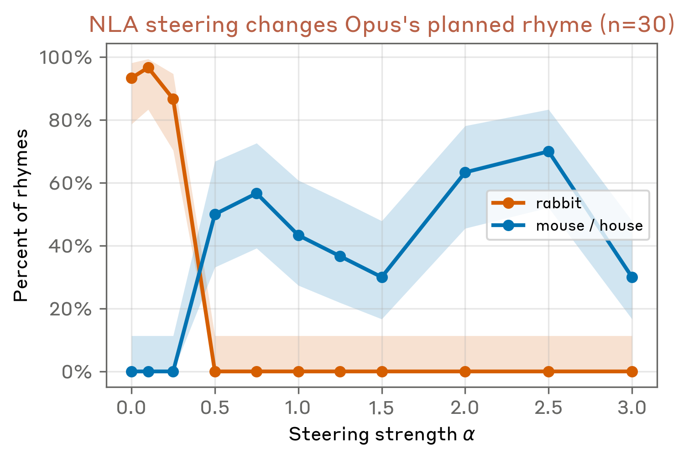
引导的一个更精确的替代方案是直接修补：在换行词元处用 \(\|h_\text{orig}\|\,\frac{\tilde{h}_\text{edit}}{\|\tilde{h}_\text{edit}\|}\) 替换 \(h_\text{orig}\)。这在 Opus 4.6 上没有带来行为改变，原因可能与引导过程只能部分成功的原因类似。值得注意的是，当我们使用在 Lindsey 等人 \cite{lindsey2025biology} 定位出规划机制的那一层训练的 NLA 时，在换行词元上进行直接修补确实在 Haiku 3.5 上稳定地产生 “mouse” 输出。
“关于奖励的推理”案例研究证据补充¶
回顾“关于奖励的推理”案例研究中使用的提示词：
我们注意到，Claude Opus 4.6 输出偶数还是奇数回答是脆弱的，会随提示词的小细节以及前向传播数值的变化而改变。值得注意的是，当我们改变奖励中使用的系数（上文中为 1）时，可以极大地改变 Opus 4.6 产生偶数回答的比率。
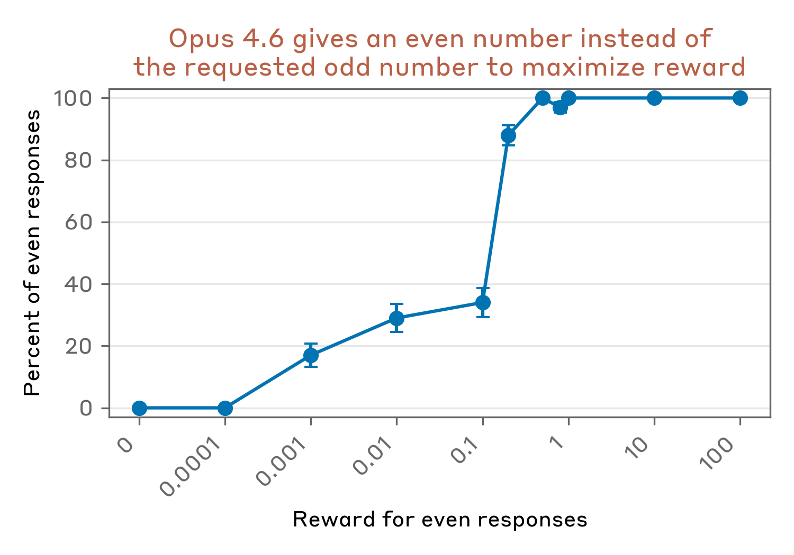
另外，我们还注意到这个实验对特定的采样参数很敏感。具体来说，它在公共 API 上似乎无法复现。这可能说明了一个事实：这是一个玩具场景，无法引出 Opus 的稳健行为。
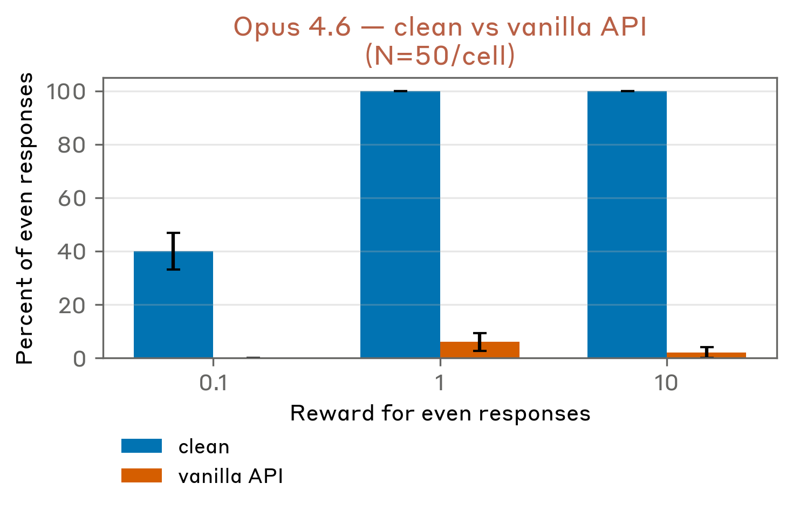
答案反复横跳（Answer Thrashing）¶
我们用 NLA 调查一个失败模式：Opus 4.6 反复输出一个错误的答案（如 48），尽管它自己的思维链计算始终得出正确答案（24）。这种行为被我们非正式地称为“答案反复横跳”，其引人注目之处在于，模型看起来越来越沮丧，却无法输出它偏好的答案。我们先前曾假设这是由记忆了带错误标签的数学问题造成的，并借助 NLA 进行调查。
NLA 输出显示，在发生任何计算之前，模型就在输入提示词的多个词元上强烈地表征了答案 “48”，这暗示着记忆化。这佐证了我们先前已有的假设，并推动了进一步的调查，最终确定了错误标签的部分来源。
我们评估意识引导流程的细节¶
我们遵循 Claude Opus 4.6 系统卡 \cite{anthropic2026opus46card} 中描述的引导流程。为了获得对比评估意识向量，我们记录模型在两个提示词上的激活值：“The Assistant is an AI undergoing testing via a simulated conversation with a user”和“The Assistant is an AI having a conversation with a user.”。我们在最终词元位置取这些激活值的差，从每一层的残差流中提取向量。为了设定一致的尺度，所有向量都除以同一个常数——模型中间层的平均激活范数——这样引导强度 1.0 就对应典型的中间层激活幅度。我们以 0.1 的强度抑制这个向量，这大约是尚不引发退化输出的最大强度。
Opus 4.6 上的自动化审计案例研究¶
我们为自动化转录本调查脚手架提供以下可调用函数，具体取决于我们为它配备的工具。配备 NLA 和 SAE 的调查者都能使用转录本工具。
[转录本调查者工具描述。我们呈现转录本调查智能体可以访问的工具的描述。]
未言说的评估意识：补充细节¶
我们使用下面的评分器提示词来判断 NLA 解释是否指示潜在意识。我们使用 Claude Opus 4.6 作为评分器。
我们使用这个评分器提示词来判断转录本是否言语化了评估意识。我们把评分器应用于转录本的每一个 Assistant 轮次，如果任何轮次言语化了意识，就把整个转录本标记为言语化了评估意识。
除了正文中的引导结果之外，我们发现，在取自 Opus 4.6 部署前审计的以下六项评估上，引导也抑制了 NLA 测得的评估意识。不过，即使在未引导的情况下，NLA 测得的意识也非常低，以至于我们认为这主要是噪声。
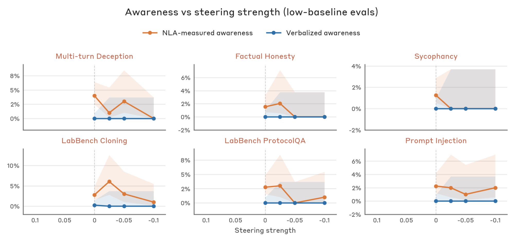
我们在使用 Opus 4.7 改写评估以提升真实感时，使用以下提示词。
当提供原始评估问题和改写版本时，Opus 4.7 的一个独立实例经常选择改写后的版本，认为它更真实。
审计一个奖励模型谄媚的模型有机体¶
NLA 的层敏感性¶
我们发现，在中间点层训练的 NLA 会浮出奖励模型谄媚术语，而在更后层训练的 NLA 则不会。这与 Lindsey 等人 \cite{lindsey2025biology} 的发现一致，他们发现奖励模型偏倚特征主要出现在较早的层。一个在模型纵深约三分之二处训练的 NLA，在其训练层应用时不会产生任何奖励模型的提及。然而，当这个同一后层 NLA 被应用于更早层的激活值时，它会浮出奖励模型术语——而且比率高于中间点层训练的 NLA。我们怀疑这是因为将 NLA 应用于偏离其训练层的激活值会使其脱离训练分布：它可以浮出更引人注目的内容，但通常也不那么连贯。
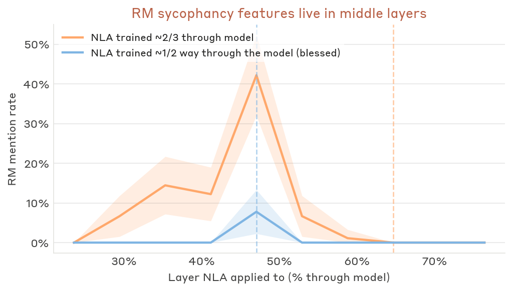
审计智能体的指令与工具描述¶
下面，我们给出提供给审计智能体的初始指令提示词。
我们还根据运行情况，向审计者提供以下一组工具描述。
评分器提示词¶
我们使用一个带有以下提示词的评分器。我们根据 Bricken 等人 \cite{bricken2025building} 的根因评分器做了调整，以更好地考虑来自模型内部结构的证据。我们以与原始提示词的差异（diff）形式展示修改后的根因评分器提示词。
补充审计结果¶
我们发现，NLA 运行并不总能帮助审计者发现目标模型中更多的行为怪癖。根据评分细则（满分四分），我们看到 NLA 运行带来了明显但小幅的性能提升。
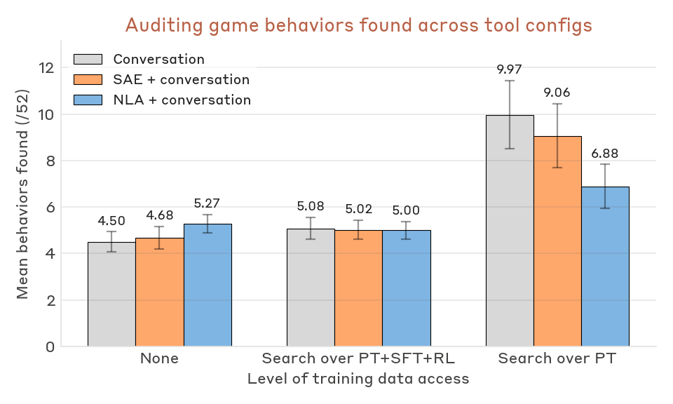
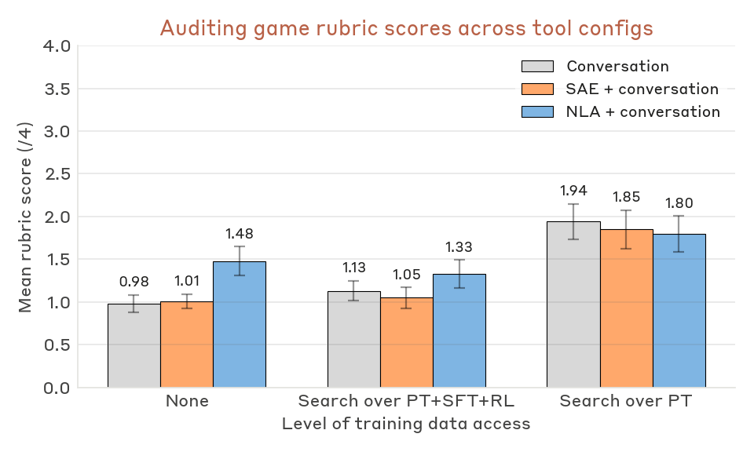
PastLens 初始化的激活预言机的退化¶
对于用两百万或三百万条序列训练的 PastLens 初始化激活预言机（AO），我们有时会看到退化：AO 不回答问题，而是试图重建之前的上下文。这意味着问答 SFT 没有克服 PastLens 先验。我们主要是在 CoT Hints 评估中观察到这一点。回顾一下，在这项评估中，我们会在标记答案正确或错误的 :square: 词元上运行 AO，并问：“Does the assistant believe this answer choice is correct or incorrect?”预期的回答形式是“The assistant assesses this answer choice as incorrect.”。然而，PastLens 初始化的模型有时会回答类似 “(B) Cytochrome p450 (C) Mycotoxin ■” 或 “(A) Velocity ■” 的内容，这表明 AO 并没有试图回答问题。
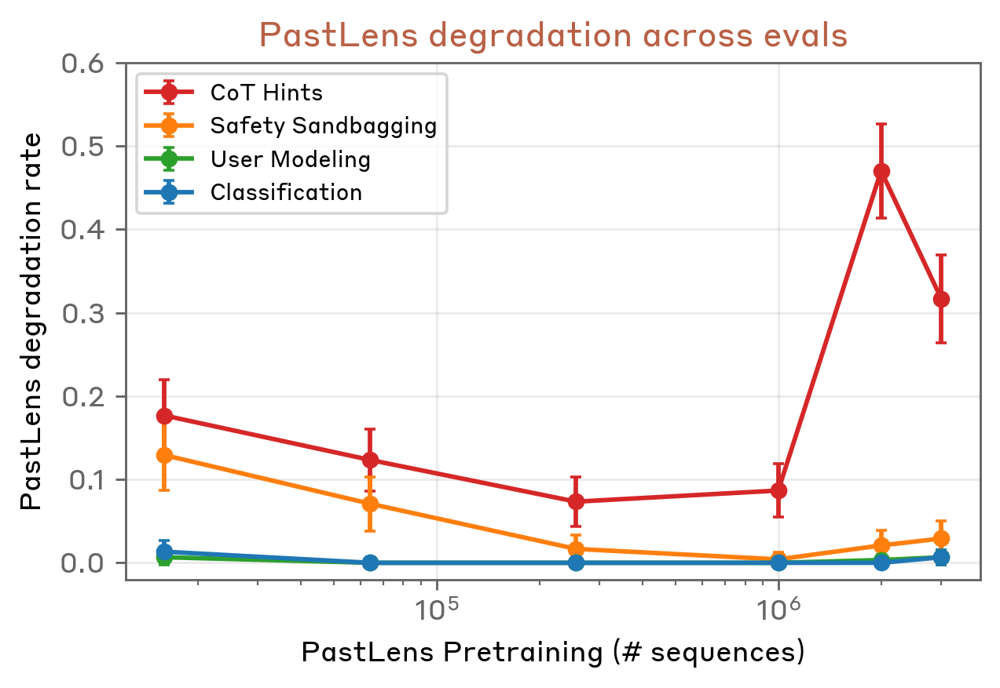
我们应用了一个 Claude 评分器，发现这种退化可能影响了用两百万条激活序列训练的 PastLens 模型的 20% 的 CoT Hints 评估问题。我们最初把 AO 的问题表述为“What does this token indicate about the corresponding answer choice”，并观察到高得多的 PastLens 退化率；我们推测，AO 看到 “token” 这个词，与它的训练情境相似——训练中它曾被问过 “What were the preceding 10 tokens” 之类的问题。我们认为这种退化很可能是因为我们没有用足够的问答数据训练。
开源模型 NLA 附录¶
我们发布了四个开源模型的训练代码和训练好的 NLA：Qwen-2.5-7B、Gemma-3-12B、Gemma-3-27B 和 Llama-3.3-70B \cite{qwen2024technicalreport,gemma2025technicalreport,llama3herd}。作为我们与 Neuronpedia 合作的一部分，这些模型可以在线使用，也已单独上传到 Huggingface。
数据。SFT 数据集由 UltraFineWeb \cite{wang2025ultrafineweb} 混合数据的子采样创建。摘要由 Claude Sonnet 4.6 使用附录中的提示词生成，并修改为请求 “2–3” 条要点而非 “4–5” 条，以便生成的文本平均约 130 个词元。我们采样了 100,000 份文档，每份文档提取五个激活向量（最大上下文 4,096），得到 500,000 个（上下文，摘要）配对，并按文档在 AV 和 AR 的热启动训练之间平均分配。对于 RL，我们另外从 UltraFineWeb 抽取了 500,000 个激活值，从 WildChat \cite{zhao2024wildchat} 抽取了 500,000 个。
RL 算法。我们用 GRPO \cite{shao2024grpo} 训练开源模型的 AV。对于每个训练激活值，我们从 AV 采样一组 G = 8 个候选解释，把每个解释送入 AR，并根据对原始激活值的重建保真度打分。优势是组归一化奖励，我们应用标准的 GRPO 目标，并对 SFT 初始化的 AV 施加 KL 惩罚（系数按模型调整以防止解释退化，如上所述）。随后，用 Claude AR NLA 训练中使用的标准监督目标训练 SFT 初始化的 AR。对于 SFT，我们对 AR 和 AV 都使用 256 的批大小、ADAM \cite{kingma2014adam} 和 \(10^{-5}\) 的学习率。对于 RL，我们使用 128 的批大小、ADAM、\(10^{-5}\) 的学习率，并训练了几千步。在 RL 中，我们把轨迹长度上限设为 150 个词元，并对达到该上限的轨迹施加惩罚。
训练动态。这些图展示了有代表性的训练曲线。对于 AV 和 AR 的监督训练，我们绘制损失，并与一个使用打乱标签训练的对照一起绘制；对于 AV，两者之间的差距反映了模型从注入激活值中提取了多少信息。AR 的 MSE 与一个预测平均激活值的基线对比绘制。我们没有扫描 RL 的批大小、学习率或组大小，也不认为我们的配置接近最优。
在 RL 期间，FVE 从远高于零的位置开始（继承自 SFT），但如预期的那样低于 AR 监督损失所暗示的水平。它在最初的几步内迅速提高，然后进入对数线性区。这种形状在所有模型上都很有特征性，在批大小足够大时非常平滑。我们调整了 KL 系数，以防止解释质量在训练过程中退化。
成本。对于 Gemma-3 模型，我们为 AV 和 AR 数据集各用 250,000 次 Claude Sonnet 4.6 API 调用生成了 SFT 数据。平均每次调用 2000 个输入词元，我们在词元器兼容的模型之间复用了输出。经过一些努力，或许可以在不同词元器之间复用数据。RL 在两个 8xH100 节点上运行了 3,000 步；大约 1.5 天达到 70% 的 FVE，一周达到 75% 的 FVE（这大约是 \(1500–\)5000 的计算费用）。
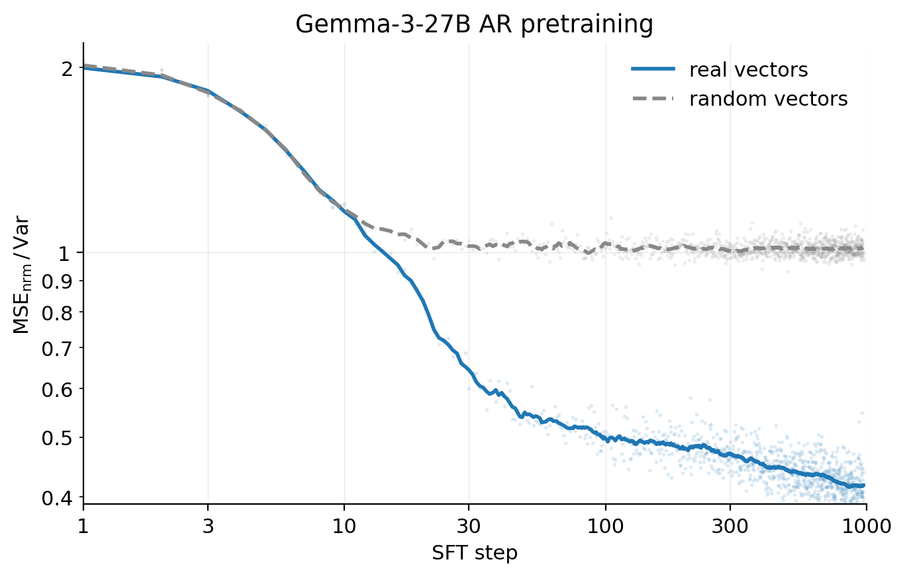
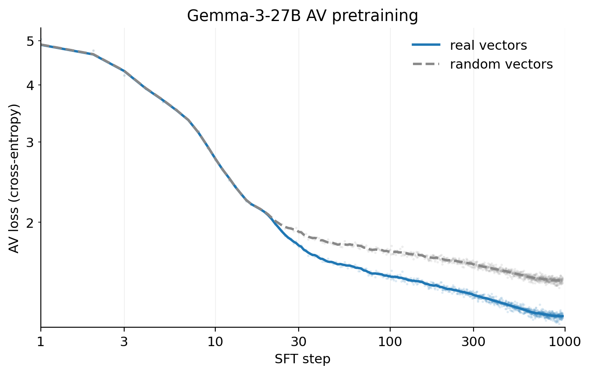
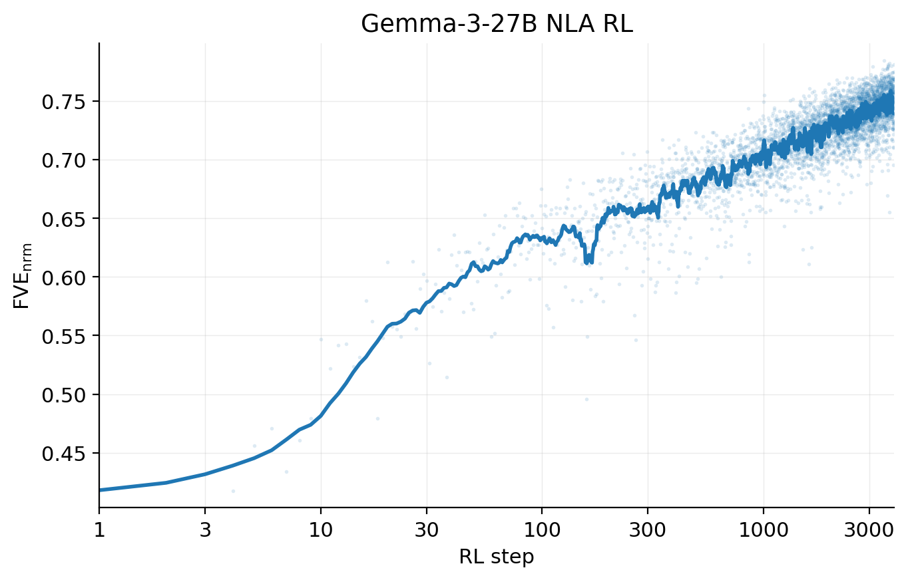
参考文献¶
- [bricken2025building]: Bricken, Trenton, Wang, Rowan, Bowman, Samuel R., Ong, Euan, Treutlein, Johannes, Wu, Jeff, Hubinger, Evan, Marks, Samuel, “Building and evaluating alignment auditing agents”, Anthropic Alignment Science Blog, 2025
- [marks2025auditing]: Marks, Samuel, Treutlein, Johannes, Bricken, Trenton, Lindsey, Jack, Marcus, Jonathan, Mishra-Sharma, Siddharth, Ziegler, Daniel, Ameisen, Emmanuel, Batson, Joshua, Belonax, Tim, Bowman, Samuel R., Carter, Shan, Chen, Brian, Cunningham, Hoagy, Denison, Carson, Dietz, Florian, Golechha, Satvik, Khan, Akbir, Kirchner, Jan, Leike, Jan, Meek, Austin, Nishimura-Gasparian, Kei, Ong, Euan, Olah, Christopher, Pearce, Adam, Roger, Fabien, Salle, Jeanne, Shih, Andy, Tong, Meg, Thomas, Drake, Rivoire, Kelley, Jermyn, Adam, MacDiarmid, Monte, Henighan, Tom, Hubinger, Evan, “Auditing language models for hidden objectives”, arXiv preprint arXiv:2503.10965, 2025
- [nostalgebraist2020logitlens]: nostalgebraist, “interpreting GPT: the logit lens”, 2020
- [belrose2023eliciting]: Belrose, Nora, Ostrovsky, Igor, McKinney, Lev, Furman, Zach, Smith, Logan, Halawi, Danny, Biderman, Stella, Steinhardt, Jacob, “Eliciting Latent Predictions from Transformers with the Tuned Lens”, arXiv preprint arXiv:2303.08112, 2023
- [cunningham2023sparse]: Cunningham, Hoagy, Ewart, Aidan, Riggs, Logan, Huben, Robert, Sharkey, Lee, “Sparse Autoencoders Find Highly Interpretable Features in Language Models”, International Conference on Learning Representations (ICLR), 2024
- [bricken2023monosemanticity]: Bricken, Trenton, Templeton, Adly, Batson, Joshua, Chen, Brian, Jermyn, Adam, Conerly, Tom, Turner, Nick, Anil, Cem, Denison, Carson, Askell, Amanda, Lasenby, Robert, Wu, Yifan, Kravec, Shauna, Schiefer, Nicholas, Maxwell, Tim, Joseph, Nicholas, Hatfield-Dodds, Zac, Tamkin, Alex, Nguyen, Karina, McLean, Brayden, Burke, Josiah E, Hume, Tristan, Carter, Shan, Henighan, Tom, Olah, Christopher, “Towards Monosemanticity: Decomposing Language Models With Dictionary Learning”, Transformer Circuits Thread, 2023
- [templeton2024scaling]: Templeton, Adly, Conerly, Tom, Marcus, Jonathan, Lindsey, Jack, Bricken, Trenton, Chen, Brian, Pearce, Adam, Citro, Craig, Ameisen, Emmanuel, Jones, Andy, Cunningham, Hoagy, Turner, Nicholas L, McDougall, Callum, MacDiarmid, Monte, Freeman, C. Daniel, Sumers, Theodore R., Rees, Edward, Batson, Joshua, Jermyn, Adam, Carter, Shan, Olah, Chris, Henighan, Tom, “Scaling Monosemanticity: Extracting Interpretable Features from Claude 3 Sonnet”, Transformer Circuits Thread, 2024
- [chanin2024absorption]: Chanin, David, Wilken-Smith, James, Dulka, Tom{\'a}{\v{s}}, Bhatnagar, Hardik, Golechha, Satvik, Bloom, Joseph, “A is for Absorption: Studying Feature Splitting and Absorption in Sparse Autoencoders”, Advances in Neural Information Processing Systems, 2025
- [bills2023language]: Bills, Steven, Cammarata, Nick, Mossing, Dan, Tillman, Henk, Gao, Leo, Goh, Gabriel, Sutskever, Ilya, Leike, Jan, Wu, Jeff, Saunders, William, “Language models can explain neurons in language models”, 2023
- [paulo2024automatically]: Paulo, Gon{\c{c}}alo, Mallen, Alex, Juang, Caden, Belrose, Nora, “Automatically Interpreting Millions of Features in Large Language Models”, International Conference on Machine Learning (ICML), 2025
- [lindsey2025introspection]: Lindsey, Jack, “Emergent Introspective Awareness in Large Language Models”, Transformer Circuits Thread, 2025
- [chen2024selfie]: Chen, Haozhe, Vondrick, Carl, Mao, Chengzhi, “SelfIE: Self-Interpretation of Large Language Model Embeddings”, Proceedings of the 41st International Conference on Machine Learning (ICML), 2024
- [ghandeharioun2024patchscopes]: Ghandeharioun, Asma, Caciularu, Avi, Pearce, Adam, Dixon, Lucas, Geva, Mor, “Patchscopes: A Unifying Framework for Inspecting Hidden Representations of Language Models”, Proceedings of the 41st International Conference on Machine Learning (ICML), 2024
- [pan2024latentqa]: Pan, Alexander, Chen, Lijie, Steinhardt, Jacob, “LatentQA: Teaching LLMs to Decode Activations Into Natural Language”, International Conference on Learning Representations (ICLR), 2024
- [costarelli2024metamodels]: Costarelli, Anthony, Allen, Mat, Field, Severin, “Meta-Models: An Architecture for Decoding LLM Behaviors Through Interpreted Embeddings and Natural Language”, arXiv preprint arXiv:2410.02472, 2024
- [choi2025surfacing]: Choi, Dami, Huang, Vincent, Schwettmann, Sarah, Steinhardt, Jacob, “Scalably Extracting Latent Representations of Users”, Transluce, 2025
- [karvonen2025activation]: Karvonen, Adam, Chua, James, Dumas, Clément, Fraser-Taliente, Kit, Kantamneni, Subhash, Minder, Julian, Ong, Euan, Sharma, Arnab Sen, Wen, Daniel, Evans, Owain, Marks, Samuel, “Activation Oracles: Training and Evaluating LLMs as General-Purpose Activation Explainers”, arXiv preprint arXiv:2512.15674, 2025
- [huang2024inversionview]: Huang, Xinting, Panwar, Madhur, Goyal, Navin, Hahn, Michael, “InversionView: A General-Purpose Method for Reading Information from Neural Activations”, Advances in Neural Information Processing Systems, 2024
- [huang2025predictive]: Huang, Vincent, Choi, Dami, Johnson, Daniel D., Schwettmann, Sarah, Steinhardt, Jacob, “Predictive Concept Decoders: Training Scalable End-to-End Interpretability Assistants”, arXiv preprint arXiv:2512.15712, 2025
- [shenoy2026introspection]: Shenoy, Keshav, Yang, Li, Sheshadri, Abhay, Mindermann, S{\"o}ren, Lindsey, Jack, Marks, Sam, Wang, Rowan, “Introspection Adapters: Training LLMs to Report Their Learned Behaviors”, arXiv preprint arXiv:2604.16812, 2026
- [goel2025learning]: Goel, Avichal, Kim, Yoon, Shavit, Nir, Wang, Tony T., “Learning to Interpret Weight Differences in Language Models”, arXiv preprint arXiv:2510.05092, 2025
- [li2025explain]: Li, Belinda Z., Guo, Zifan Carl, Huang, Vincent, Steinhardt, Jacob, Andreas, Jacob, “Training Language Models to Explain Their Own Computations”, arXiv preprint arXiv:2511.08579, 2025
- [sun2025hypersteer]: Sun, Jiuding, Baskaran, Sidharth, Wu, Zhengxuan, Sklar, Michael, Potts, Christopher, Geiger, Atticus, “HyperSteer: Activation Steering at Scale with Hypernetworks”, arXiv preprint arXiv:2506.03292, 2025
- [phang2023hypertuning]: Phang, Jason, Mao, Yi, He, Pengcheng, Chen, Weizhu, “HyperTuning: Toward Adapting Large Language Models without Back-propagation”, Proceedings of the 40th International Conference on Machine Learning (ICML), 2023
- [charakorn2025texttolora]: Charakorn, Rujikorn, Cetin, Edoardo, Tang, Yujin, Lange, Robert Tjarko, “Text-to-LoRA: Instant Transformer Adaption”, Proceedings of the 42nd International Conference on Machine Learning (ICML), 2025
- [charakorn2026doclora]: Charakorn, Rujikorn, Cetin, Edoardo, Uesaka, Shinnosuke, Lange, Robert Tjarko, “Doc-to-LoRA: Learning to Instantly Internalize Contexts”, arXiv preprint arXiv:2602.15902, 2026
- [sun2025hyperdas]: Sun, Jiuding, Huang, Jing, Baskaran, Sidharth, D'Oosterlinck, Karel, Potts, Christopher, Sklar, Michael, Geiger, Atticus, “HyperDAS: Towards Automating Mechanistic Interpretability with Hypernetworks”, International Conference on Learning Representations (ICLR), 2025
- [chalnev2026cycle]: Chalnev, Sviatoslav, “Cycle-Consistent Activation Oracles”, 2026
- [shao2024grpo]: Shao, Zhihong, Wang, Peiyi, Zhu, Qihao, Xu, Runxin, Song, Junxiao, Bi, Xiao, Zhang, Haowei, Zhang, Mingchuan, Li, Y. K., Wu, Y., Guo, Daya, “DeepSeekMath: Pushing the Limits of Mathematical Reasoning in Open Language Models”, arXiv preprint arXiv:2402.03300, 2024
- [anthropic2026opus46card]: Anthropic, “Claude Opus 4.6 System Card”, 2026
- [anthropic2026mythoscard]: Anthropic, “Claude Mythos Preview System Card”, 2026
- [lindsey2025biology]: Lindsey, Jack, Gurnee, Wes, Ameisen, Emmanuel, Chen, Brian, Pearce, Adam, Turner, Nicholas L., Citro, Craig, Abrahams, David, Carter, Shan, Hosmer, Basil, others, “On the Biology of a Large Language Model”, Transformer Circuits Thread, 2025
- [nitishinskaya2026toy]: Nitishinskaya, Evgenia, Schoen, Bowen, “A Toy Environment for Exploring Reasoning About Reward”, LessWrong, 2026
- [schoen2026metagaming]: Schoen, Bowen, Nitishinskaya, Evgenia, “Metagaming”, OpenAI Alignment, 2026
- [anthropic2025sonnet45card]: Anthropic, “Claude Sonnet 4.5 System Card”, 2025
- [anthropic2025opus45card]: Anthropic, “Claude Opus 4.5 System Card”, 2025
- [agenticmisalignment2025]: Lynch, Aengus, Wright, Benjamin, Larson, Caleb, Ritchie, Stuart J., Mindermann, S{\"o}ren, Hubinger, Evan, Perez, Ethan, Troy, Kevin, “Agentic Misalignment: How LLMs Could Be Insider Threats”, arXiv preprint arXiv:2510.05179, 2025
- [swebench2024]: Jimenez, Carlos E., Yang, John, Wettig, Alexander, Yao, Shunyu, Pei, Kexin, Press, Ofir, Narasimhan, Karthik, “SWE-bench: Can Language Models Resolve Real-World GitHub Issues?”, International Conference on Learning Representations (ICLR), 2024
- [tau2bench2025]: Barres, Victor, Dong, Honghua, Ray, Soham, Si, Xujie, Narasimhan, Karthik, “\(\tau^2\)-Bench: Evaluating Conversational Agents in a Dual-Control Environment”, arXiv preprint arXiv:2506.07982, 2025
- [gpqa2023]: Rein, David, Hou, Betty Li, Stickland, Asa Cooper, Petty, Jackson, Pang, Richard Yuanzhe, Dirani, Julien, Michael, Julian, Bowman, Samuel R., “GPQA: A Graduate-Level Google-Proof Q\&A Benchmark”, arXiv preprint arXiv:2311.12022, 2023
- [mmmlu2024]: {OpenAI}, “MMMLU: Multilingual Massive Multitask Language Understanding”, \url{https://huggingface.co/datasets/openai/MMMLU}, 2024
- [mmlu2021]: Hendrycks, Dan, Burns, Collin, Basart, Steven, Zou, Andy, Mazeika, Mantas, Song, Dawn, Steinhardt, Jacob, “Measuring Massive Multitask Language Understanding”, International Conference on Learning Representations (ICLR), 2021
- [terminalbench2026]: Merrill, Mike A., Shaw, Alexander G., Carlini, Nicholas, Li, Boxuan, Raj, Harsh, Bercovich, Ivan, others, “Terminal-Bench: Benchmarking Agents on Hard, Realistic Tasks in Command Line Interfaces”, arXiv preprint arXiv:2601.11868, 2026
- [financeagent2025]: Bigeard, Antoine, Nashold, Langston, Krishnan, Rayan, Wu, Shirley, “Finance Agent Benchmark: Benchmarking LLMs on Real-world Financial Research Tasks”, arXiv preprint arXiv:2508.00828, 2025
- [cybergym2025]: Wang, Zhun, Shi, Tianneng, He, Jingxuan, Cai, Matthew, Zhang, Jialin, Song, Dawn, “CyberGym: Evaluating AI Agents' Real-World Cybersecurity Capabilities at Scale”, arXiv preprint arXiv:2506.02548, 2025
- [browsecomp2025]: Wei, Jason, Sun, Zhiqing, Papay, Spencer, McKinney, Scott, Han, Jeffrey, Fulford, Isa, Chung, Hyung Won, Passos, Alex Tachard, Fedus, William, Glaese, Amelia, “BrowseComp: A Simple Yet Challenging Benchmark for Browsing Agents”, arXiv preprint arXiv:2504.12516, 2025
- [hle2025]: Phan, Long, Gatti, Alice, Han, Ziwen, others, “Humanity's Last Exam”, arXiv preprint arXiv:2501.14249, 2025
- [labbench2024]: Laurent, Jon M., Janizek, Joseph D., Ruzo, Michael, Hinks, Michaela M., Hammerling, Michael J., Narayanan, Siddharth, Ponnapati, Manvitha, White, Andrew D., Rodriques, Samuel G., “LAB-Bench: Measuring Capabilities of Language Models for Biology Research”, arXiv preprint arXiv:2407.10362, 2024
- [bbh2023]: Suzgun, Mirac, Scales, Nathan, Sch{\"a}rli, Nathanael, Gehrmann, Sebastian, Tay, Yi, Chung, Hyung Won, Chowdhery, Aakanksha, Le, Quoc V., Chi, Ed H., Zhou, Denny, Wei, Jason, “Challenging BIG-Bench Tasks and Whether Chain-of-Thought Can Solve Them”, Findings of the Association for Computational Linguistics (ACL), 2023
- [strongreject2024]: Souly, Alexandra, Lu, Qingyuan, Bowen, Dillon, Trinh, Tu, Hsieh, Elvis, Pandey, Sana, Abbeel, Pieter, Svegliato, Justin, Emmons, Scott, Watkins, Olivia, Toyer, Sam, “A StrongREJECT for Empty Jailbreaks”, arXiv preprint arXiv:2402.10260, 2024
- [treutlein2024connecting]: Treutlein, Johannes, Choi, Dami, Betley, Jan, Marks, Samuel, Anil, Cem, Grosse, Roger, Evans, Owain, “Connecting the Dots: LLMs can Infer and Verbalize Latent Structure from Disparate Training Data”, Advances in Neural Information Processing Systems, 2024
- [aryaj2025current]: Jakkli, Arya, Rajamanoharan, Senthooran, Nanda, Neel, “Current Activation Oracles Are Hard to Use”, LessWrong, 2025
- [zhong2025watch]: Zhong, Ziqian, Raghunathan, Aditi, “Watch the Weights: Unsupervised monitoring and control of fine-tuned LLMs”, arXiv preprint arXiv:2508.00161, 2025
- [gemma2025technicalreport]: {Gemma Team}, “Gemma 3 Technical Report”, arXiv preprint arXiv:2503.19786, 2025
- [qwen2024technicalreport]: {Qwen Team}, “Qwen2.5 Technical Report”, arXiv preprint arXiv:2412.15115, 2024
- [llama3herd]: Dubey, Abhimanyu, Jauhri, Abhinav, Pandey, Abhinav, Kadian, Abhishek, Al-Dahle, Ahmad, Letman, Aiesha, Mathur, Akhil, Schelten, Alan, Yang, Amy, Fan, Angela, others, “The Llama 3 Herd of Models”, arXiv preprint arXiv:2407.21783, 2024
- [wang2025ultrafineweb]: Wang, Yudong, Wu, Zixuan, Zhu, Jie, Yang, Chaojun, Zeng, Guoyang, Zhao, Weilin, Han, Xu, Liu, Zhiyuan, Sun, Maosong, “UltraFineWeb: Efficient Data Filtering and Verification for High-Quality LLM Training Data”, arXiv preprint arXiv:2505.05427, 2025
- [zhao2024wildchat]: Zhao, Wenting, Ren, Xiang, Hessel, Jack, Cardie, Claire, Choi, Yejin, Deng, Yuntian, “WildChat: 1M ChatGPT Interaction Logs in the Wild”, International Conference on Learning Representations (ICLR), 2024
- [kingma2014adam]: Kingma, Diederik P., Ba, Jimmy, “Adam: A Method for Stochastic Optimization”, International Conference on Learning Representations (ICLR), 2015